<!doctype html>
<html lang="en">
<head>
  <meta charset="utf-8">
  <meta name="viewport" content="width=device-width, initial-scale=1">
  <title>arxiv digest — 2026-10-24</title>
  <style>
:root {
  --bg: #ffffff;
  --fg: #1f2328;
  --muted: #59636e;
  --border: #d0d7de;
  --card: #f6f8fa;
  --link: #0969da;
}
body {
  max-width: 980px;
  margin: 0 auto;
  padding: 2rem 1rem 5rem;
  font-family: -apple-system, BlinkMacSystemFont, "Segoe UI", Helvetica, Arial, sans-serif;
  line-height: 1.55;
  color: var(--fg);
  background: var(--bg);
}
a { color: var(--link); }
img { max-width: 100%; height: auto; }
pre, code { background: var(--card); border-radius: 6px; }
pre { padding: 1rem; overflow-x: auto; }
blockquote { border-left: 4px solid var(--border); padding-left: 1rem; color: var(--muted); }
details { margin: 0.6rem 0; }
summary { cursor: pointer; font-weight: 600; }
.paper-figures-scroll {
  display: flex;
  gap: 1rem;
  overflow-x: auto;
  overscroll-behavior-x: contain;
  padding: 0.75rem 0.25rem 1rem;
  margin: 1rem 0 1.25rem;
  border-top: 1px solid var(--border);
  border-bottom: 1px solid var(--border);
  scroll-snap-type: x proximity;
}
.paper-figure-card {
  flex: 0 0 min(260px, 72vw);
  scroll-snap-align: start;
  background: var(--card);
  border: 1px solid var(--border);
  border-radius: 12px;
  padding: 0.55rem;
}
.paper-figure-card img {
  display: block;
  width: 100%;
  max-height: 240px;
  object-fit: contain;
  background: white;
  border-radius: 8px;
}
.paper-figure-caption {
  display: block;
  margin-top: 0.5rem;
  color: var(--muted);
  font-size: 0.85rem;
}
.figure-strip-hint {
  color: var(--muted);
  font-size: 0.9rem;
  margin-bottom: -0.3rem;
}
</style>
  <script>
    window.MathJax = {
      tex: {
        inlineMath: [['$', '$'], ['\\(', '\\)']],
        displayMath: [['$$', '$$'], ['\\[', '\\]']],
        processEscapes: true,
        processEnvironments: true
      },
      options: {
        skipHtmlTags: ['script', 'noscript', 'style', 'textarea', 'pre', 'code'],
        ignoreHtmlClass: 'tex2jax_ignore',
        processHtmlClass: 'tex2jax_process'
      }
    };
  </script>
  <script id="MathJax-script" async
    src="https://cdn.jsdelivr.net/npm/mathjax@3/es5/tex-chtml.js"></script>
</head>
<body>
<header style="background-color: #333; color: white; padding: 15px; margin-bottom: 20px;">
  <h1 style="margin: 0; font-size: 24px;">
    <a href="https://ochelpan.github.io/arXiv_clean/" style="color: white; text-decoration: none;">Main</a>
  </h1>
</header>

<h1>Daily arXiv Report</h1>

<hr>
<p>
<a href="index.html">← Index</a>
 · <a href="papers_01.html">← Previous</a> · <a href="papers_03.html">Next →</a>
</p>
<hr>

<h2>Papers 21–40</h2>
<p><a id="paper-2610.31452"></a></p>
<h3 id="nanopillar-metasurfaces-uniting-high-optical-reflectivity-with-ultracoherent-nanomechanics"><a href="http://arxiv.org/abs/2610.31452v1">Nanopillar metasurfaces uniting high optical reflectivity with ultracoherent nanomechanics</a></h3>
<p><strong>Authors:</strong> Alexander Jung, Anastasiia Ciers, Hannes Pfeifer, Albert Hansson, Johanna Örgård, Daniel Stachanow, Viktor A. Lilja, Philippe Tassin, Witlef Wieczorek<br>
<strong>Type:</strong> both · <strong>Category:</strong> other · <strong>PDF:</strong> <a href="https://arxiv.org/pdf/2610.31452v1">https://arxiv.org/pdf/2610.31452v1</a><br>
<strong>Analysis basis:</strong> full PDF text, analyzed in chunks
<strong>Topic relevance:</strong> <code>interference shaping light</code> <strong>3/5</strong> · <code>quantum optics experiment</code> <strong>3/5</strong> · <code>analog quantum simulation</code> <strong>2/5</strong> · <code>driven-dissipative phase transition</code> <strong>2/5</strong> · <code>methods for driven-dissipative</code> <strong>2/5</strong> · <code>quantum measurements</code> <strong>1/5</strong></p>
<div class="figure-strip-hint">↔ Scroll figures horizontally</div>
<div class="paper-figures-scroll">
<figure class="paper-figure-card">
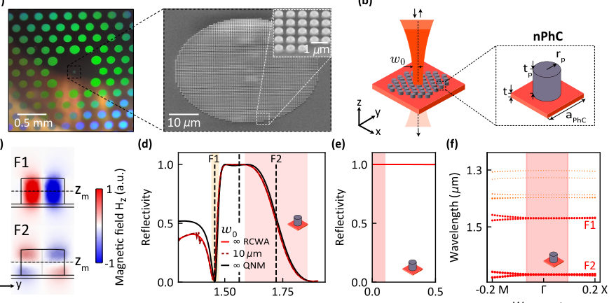
<figcaption class="paper-figure-caption"><b>Fig 1.</b> FIG. 1. Highly reflective nanopillar PhC (nPhC) for a focused Gaussian beam. (a) Image of a fabricated nanopillar metasurface and scanning electron microscope (SEM) image of a 50 µm diameter nPhC placed in its center. (b) Illustration of a Gaussian beam with waist w0 focused onto an nPhC. The nPhC is made from amorphous silicon nanopillars (grey) on top of Si3N4 (red). (c) Magnetic field strength component Hz for the guided resonances F1 and F2 in the unit cell of the nPhC. The mode F1 has its magnetic field symmetric with regard to the zm mirror-plane (even mode and TE-like), while mode F2 has its magnetic field antisymmetric (odd mode and TM-like). (d) Reflectivity of an nPhC for a plane...</figcaption>
</figure>
<figure class="paper-figure-card">
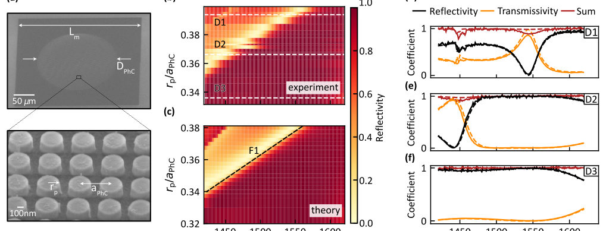
<figcaption class="paper-figure-caption"><b>Fig 2.</b> FIG. 2. Reflectivity of fabricated nPhC devices for a Gaussian beam with a waist of 8 µm. (a) SEM image of a device with an nPhC of diameter DPhC = 200 µm and aPhC = 0.74 µm on a square Si3N4 membrane of length Lm = 300 µm. (b) Measured reflectivity spectrum for different radii rp of the nanopillar. Dashed lines mark the cuts for measurements of devices D1, D2, and D3. (c) RCWA simulations of the reflectivity. The dashed line shows the eigenfrequency of the F1 mode. (d,e,f) Measured (solid) and RCWA simulated (dashed) reflectivity (black), transmissivity (orange), and their sum (red) for devices D1, D2, and D3 with rp/aPhC extracted from SEM images as 0.394, 0.366, and 0.336, respectively.</figcaption>
</figure>
<figure class="paper-figure-card">
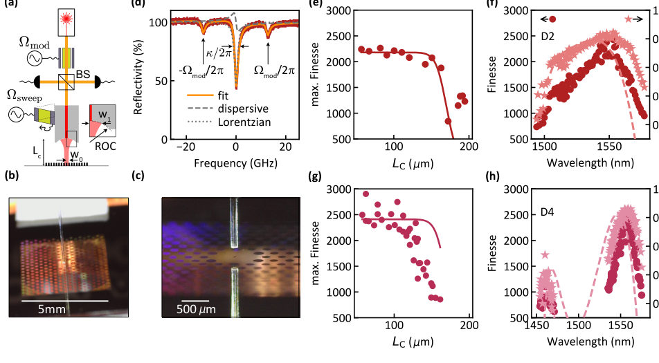
<figcaption class="paper-figure-caption"><b>Fig 3.</b> FIG. 3. High-precision reflectivity measurements of nPhCs using a fiber cavity. (a) Illustration of the fiber-cavity setup. A laser beam is phase-modulated at Ωmod and reflected off the fiber cavity, while the length of the cavity is swept through the cavity resonance. (b, c) Images of an assembled cavity between a fiber-mirror and device D4, which is an nPhC in the center of a density-modulated phononic crystal membrane. (d) Reflection response of the cavity of linewidth κ. (e) and (g) Finesse F in dependence of cavity length Lc for devices D2 with a 200 µm-nPhC and D4 with a 50 µm-nPhC, respectively. (f) and (h) Finesse F (circles) and reflectivity (stars) in dependence on the laser...</figcaption>
</figure>
<figure class="paper-figure-card">
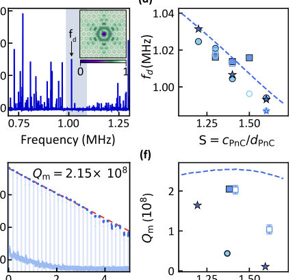
<figcaption class="paper-figure-caption"><b>Fig 4.</b> FIG. 4. Ultracoherent nanomechanics integrated with an nPhC. (a) Optical image of the defect region of a density- modulated phononic crystal membrane. Insets show SEM images of the high-density regions. Top: nanopillar array arranged in a hexagonal lattice for the phononic crystal. Bot- tom: nanopillar array arranged in a square lattice forming the nPhC. (b) Band diagram for the hexagonal unit cell of the phononic crystal in the first Brillouin zone. Inset shows the hexagonal unit cell with the high density region in the cen- ter. (c) NPS of a phononic crystal membrane. A defect mode is visible in the bandgap (highlighted). The inset shows the simulated displacement of the defect mode. (d)...</figcaption>
</figure>
</div>

<p><strong>Summary.</strong> This paper presents a breakthrough in optomechanics by developing nanopillar metasurfaces that overcome the conflict between high optical reflectivity and thin mechanical membranes. By engineering the structure as a photonic crystal, they achieve near-perfect reflectivity while simultaneously creating an ultra-coherent mechanical resonator, enabling lightweight, room-temperature quantum optomechanical devices.</p>
<p><strong>Why it may be interesting.</strong> This work directly addresses the engineering challenge of integrating high-performance optical cavities with high-quality mechanical resonators, which is a cornerstone problem in quantum optomechanics and cavity QED.</p>
<details>
<summary>Detailed structure</summary>
<p><strong>Main problem.</strong> The primary challenge is overcoming the inherent trade-off in optomechanics where high optical reflectivity requires thick structures, while achieving ultracoherent nanomechanics demands thin membranes.</p>
<p><strong>Main result.</strong> The authors successfully designed and demonstrated nanopillar metasurfaces that simultaneously achieve high optical reflectivity ($\sim 99.82\%$) and support an ultracoherent mechanical mode ($Q\cdot f$-product of $2\cdot 10^{14}	ext{Hz}$) at room temperature.</p>
<p><strong>Method.</strong> The methodology involves patterning high-refractive-index nanopillars to form a photonic crystal (PhC) on a thin membrane, which is characterized using both optical (reflectivity/cavity) and mechanical (NPS/ring-down) measurements.</p>
<p><strong>Model / system.</strong> The physical system is a high-refractive-index nanopillar metasurface patterned on a thin membrane, forming both a photonic crystal (for light) and a density-modulated phononic crystal (for mechanics). The performance is analyzed using QNM theory for optics and standard mechanical resonance characterization for mechanics.</p>
<p><strong>Key observables.</strong> Optical reflectivity ($R \approx 99.82\%$), mechanical quality factor ($Q \cdot f$-product $\approx 2\cdot 10^{14}	ext{Hz}$), and the single-photon cooperativity ($C_q$).</p>
<p><strong>Important parameters / regimes.</strong> Membrane thickness ($35	ext{ nm}$), nanopillar array period ($a_{	ext{PhC}} = 0.74\ \mu	ext{m}$), and room temperature ($300	ext{ K}$) operation.</p>
<p><strong>Assumptions / limitations.</strong> The quantum control analysis relies on 'optimistic parameters' for future experiments, and the optical loss is attributed to material absorption in the a-Si nanopillars.</p>
<p><strong>Figures summary.</strong> Figures illustrate the nPhC structure, the interaction of Gaussian beams, band diagrams showing guided resonances, SEM images of fabricated devices, and measurements of reflectivity spectra and mechanical noise power spectra.</p>
<p><strong>Paper structure.</strong> The paper addresses the fundamental trade-off, introduces the nanopillar metasurface solution, details the optical characterization (reflectivity measurements), and then integrates this with mechanical characterization to demonstrate room-temperature quantum optomechanical functionality.</p>
</details>
<details>
<summary>Abstract</summary>
<p>Mechanically compliant mirrors are key components in cavity optomechanics. However, the requirements to achieve the best optical and mechanical performance are usually in direct competition. A high reflectivity for tightly focused beams entails thick reflectors, whereas ultracoherent flexural nanomechanics necessitates thin membranes. We eliminate this trade-off by introducing high-refractive-index nanopillar metasurfaces on top of a thin membrane. We pattern a 50 micrometer-diameter array of nanopillars to form a photonic crystal. The flat band behavior of guided resonances in the photonic crystal enables a reflectivity of 99.82(1)% for a tightly focused beam of 7 micrometer waist. The combination of two guided resonances creates a 100 nanometer-wide high-reflectivity band around 1550 nanometer. Simultaneously, the nanopillar patterning realizes a density-modulated phononic crystal that isolates an ultracoherent localized mechanical mode with a $Q\cdot f$-product of $2\cdot 10^{14}$Hz. The demonstrated nanopillar metasurfaces enable lightweight mirrors for room-temperature quantum optomechanics and for use as levitated mirrors or lightsails.</p>
</details>
<p><sub><a href="#top">↑ back to top</a></sub></p>

<p><a id="paper-2610.31283"></a></p>
<h3 id="high-fidelity-entanglement-of-two-spectrally-distinct-solid-state-emitters"><a href="http://arxiv.org/abs/2610.31283v1">High-fidelity entanglement of two spectrally-distinct solid state emitters</a></h3>
<p><strong>Authors:</strong> Daniel R. E. Hodgson, Pieter Kok<br>
<strong>Type:</strong> theory · <strong>Category:</strong> quantum information and computing · <strong>PDF:</strong> <a href="https://arxiv.org/pdf/2610.31283v1">https://arxiv.org/pdf/2610.31283v1</a><br>
<strong>Analysis basis:</strong> full PDF text, analyzed in chunks
<strong>Topic relevance:</strong> <code>interference shaping light</code> <strong>3/5</strong> · <code>quantum measurements</code> <strong>3/5</strong> · <code>Keldysh / 2PI / non-Gaussian methods</code> <strong>1/5</strong> · <code>QC/QI experiment</code> <strong>1/5</strong> · <code>Tavis-Cummings &amp; cavity-many-emitter</code> <strong>1/5</strong> · <code>analog quantum simulation</code> <strong>1/5</strong> · <code>methods for driven-dissipative</code> <strong>1/5</strong> · <code>quantum optics experiment</code> <strong>1/5</strong></p>
<div class="figure-strip-hint">↔ Scroll figures horizontally</div>
<div class="paper-figures-scroll">
<figure class="paper-figure-card">
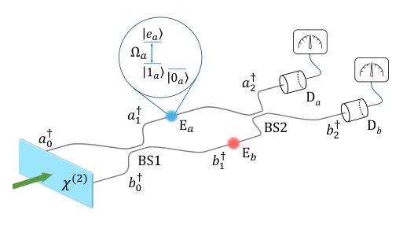
<figcaption class="paper-figure-caption"><b>Fig 1.</b> Figure 1. Two non-identical quantum emitters Ea and Eb with ‘L’ type energy configurations (shown) are embedded in separate arms of a waveguide Mach-Zehnder interferometer. A pair of entangled photons resonant with the emitters are generated through a χ(2) down conversion process and enter the interferometer simultaneously. The photons are detected by two frequency insensitive detectors Da and Db.</figcaption>
</figure>
<figure class="paper-figure-card">
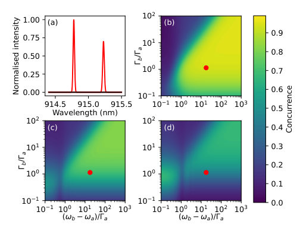
<figcaption class="paper-figure-caption"><b>Fig 2.</b> Figure 2. The concurrence of the quantum emitters follow- ing a coincidence measurement at Da and Db. (a) Typical emission line data for two emitters, collected from quantum dots embedded in a glide plane waveguide. Panels (b-d) show the concurrence against the separation of photon fre- quencies (ωb −ωa)/Γa horizontally and the relative linewidth Γb/Γa vertically for relative photon widths of σ/Γa = 0.1 (b), σ/Γa = 0.5 (c) and σ/Γa = 1.0 (d). The red spots indicate the location of the generated concurrence when the protocol is carried out for two quantum emitters with the emission data provided in panel (a). All plots are made for on resonance scattering ωi = Ωi with βi = 0.9 and i = a, b.</figcaption>
</figure>
<figure class="paper-figure-card">
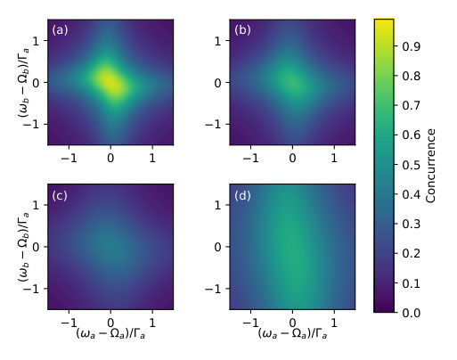
<figcaption class="paper-figure-caption"><b>Fig 3.</b> Figure 3. The concurrence of the quantum emitters following a coincidence measurement at Da and Db as a function of photon detuning (ωa −Ωa)/Γa horizontally and (ωb −Ωb)/Γa vertically. The frequency separation of the emitters is Ωb − Ωa = 50Γa and the scattering parameter is βa = βb = 0.9. Panels (a-c) show concurrence for relative photon widths of σ/Γa = 0.1, 0.5 and 1.0, respectively, with Γb = Γa. Panel (d) shows the concurrence for σ = Γa and Γb = 5Γa.</figcaption>
</figure>
</div>

<p><strong>Summary.</strong> This paper details a novel protocol to deterministically entangle two solid-state quantum emitters that are spectrally distinct. By leveraging pre-existing entangled photon pairs, the authors bypass the need for emitters to be optically identical, a major hurdle in quantum chip fabrication. They demonstrate high entanglement fidelity using theoretical modeling and numerical calculations.</p>
<p><strong>Why it may be interesting.</strong> This work provides a crucial pathway for scaling quantum technologies by circumventing the need for perfect, identical fabrication of solid-state quantum emitters, which is a major bottleneck in quantum networking.</p>
<details>
<summary>Detailed structure</summary>
<p><strong>Main problem.</strong> The primary challenge is overcoming the scalability limitations of current entanglement protocols for solid-state emitters, which require emitters to have identical spectral properties.</p>
<p><strong>Main result.</strong> The authors present a method to deterministically entangle two spectrally-distinct solid-state emitters by utilizing readily available pairs of entangled photons, achieving high concurrence (C=0.95).</p>
<p><strong>Method.</strong> The entanglement is achieved by using two-photon entangled states generated via SPDC to mediate the interaction, effectively erasing the which-path information regardless of the emitters' spectral mismatch.</p>
<p><strong>Model / system.</strong> The system involves two solid-state quantum emitters (like quantum dots) coupled to an optical field within a waveguide Mach-Zehnder interferometer. The process is modeled using quantum field theory formalism and analyzed via POVMs corresponding to photon detection.</p>
<p><strong>Key observables.</strong> Concurrence (C), which quantifies the degree of entanglement between the two solid-state emitters.</p>
<p><strong>Important parameters / regimes.</strong> The method is robust even when the transition frequency separation ($\Omega_b - \Omega_a$) is much larger than the linewidths ($\Gamma_i$), and high concurrence is achieved with narrowband photon inputs.</p>
<p><strong>Assumptions / limitations.</strong> The analysis assumes the use of two-photon entangled states from SPDC and models photon detection using specific Positive Operator-Valued Measures (POVMs).</p>
<p><strong>Figures summary.</strong> Figures illustrate the setup in a Mach-Zehnder interferometer and show the calculated concurrence as a function of photon frequency separation and input photon bandwidth.</p>
<p><strong>Paper structure.</strong> The paper develops the theory by first deriving the initial two-photon entangled state, then applying scattering operators for the interferometer, and finally calculating the reduced density matrix of the emitters based on the three possible photon detection outcomes.</p>
</details>
<details>
<summary>Abstract</summary>
<p>Solid state quantum emitters with electronic spin properties can be entangled using optical interferometric which-path erasure techniques that rely on identical frequencies and linewidths of the emitters. This promises a powerful, fast and scalable platform for quantum technologies. Using current protocols, a pair of emitters embedded in a waveguide interferometer can be deterministically prepared in a maximally entangled state. However, the amount of entanglement diminishes rapidly with increasing separation of the emission lines and variations in the linewidths of the emitters. Solid state emitters such as quantum dots are subject to intrinsic variations in the fabrication process. Therefore, manufacturing the required number of identical emitters on a chip is not scalable. In this Letter, we present a method that uses readily available pairs of entangled photons to entangle solid state emitters with large transition frequency separations and linewidth variations, circumventing the need to fabricate optically identical emitters. We demonstrate a concurrence of C = 0.95 for typical quantum dots using narrowband photon inputs.</p>
</details>
<p><sub><a href="#top">↑ back to top</a></sub></p>

<p><a id="paper-2610.30260"></a></p>
<h3 id="maxwell-chern-simons-matter-in-adsmath154math"><a href="http://arxiv.org/abs/2610.30260v1">Maxwell-Chern-Simons-Matter in AdS$_3$</a></h3>
<p><strong>Authors:</strong> Dean Carmi, Riccardo Ciccone<br>
<strong>Type:</strong> theory · <strong>Category:</strong> strongly correlated electrons · <strong>PDF:</strong> <a href="https://arxiv.org/pdf/2610.30260v1">https://arxiv.org/pdf/2610.30260v1</a><br>
<strong>Analysis basis:</strong> full PDF text, analyzed in chunks
<strong>Topic relevance:</strong> <code>Keldysh / 2PI / non-Gaussian methods</code> <strong>3/5</strong> · <code>analog quantum simulation</code> <strong>2/5</strong> · <code>driven-dissipative phase transition</code> <strong>2/5</strong> · <code>methods for driven-dissipative</code> <strong>2/5</strong> · <code>non-equilibrium universality</code> <strong>2/5</strong> · <code>quantum measurements</code> <strong>1/5</strong></p>
<div class="figure-strip-hint">↔ Scroll figures horizontally</div>
<div class="paper-figures-scroll">
<figure class="paper-figure-card">
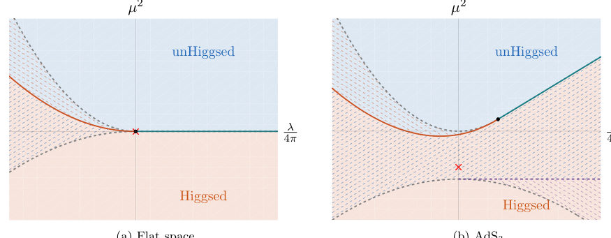
<figcaption class="paper-figure-caption"><b>Fig 1.</b> Figure 1: Scalar phase diagrams at h = 4π2. Blue and orange denote unHiggsed and Higgsed minima. Background colors identify the lower-energy minimum; hatching marks an additional minimum, with purple reserved for alternate quantization. Gray dashed curves bound existence regions. In AdS, the purple dashed half-line marks ∆ϕ = 1. Orange curves mark equal vacuum energies, teal lines continuous Higgsing, black dots their junctions, and red crosses the bulk tricritical theories.</figcaption>
</figure>
<figure class="paper-figure-card">
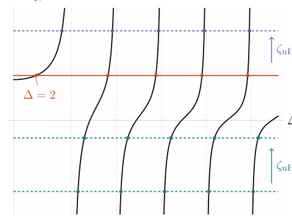
<figcaption class="paper-figure-caption"><b>Fig 2.</b> Figure 2: Scalar singlet spectrum in the unHiggsed phase at fixed ∆ϕ in standard quantization. Inter- sections of the bubble (black) with −1/ζuH give the boundary dimensions. Red marks ζuH = −8πβ, where the lightest singlet has ∆= 2; purple and teal denote negative and positive ζuH. Arrows indicate increasing ζuH; vertical guides mark the generalized-free values 2∆ϕ + 2n.</figcaption>
</figure>
<figure class="paper-figure-card">
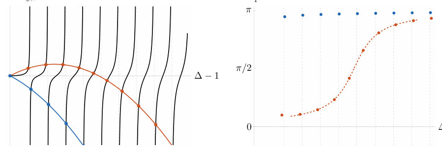
<figcaption class="paper-figure-caption"><b>Fig 3.</b> Figure 3: Spin-one spectrum and spectral phase shifts in the unHiggsed scalar phase, at ∆ϕ = 9/8, α = 30, and κ = 2π/3. (a) Intersections of the bubble (black) with −(∆−1)2/α −sκ(∆−1)/(2π) give the corresponding dimensions. (b) The s = −1 resonance and its Breit–Wigner fit (3.37), with (∆res, Γ∆) ≈(10.96, 3.84). Vertical guides mark generalized-free dimensions.</figcaption>
</figure>
<figure class="paper-figure-card">
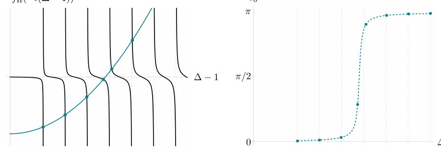
<figcaption class="paper-figure-caption"><b>Fig 4.</b> Figure 4: Scalar singlet spectrum and spectral phase shift in the Higgsed phase, at ζH = 3 and m2 ρ = 73. (a) Intersections of fH(ν) (black) with −2v2 −(ν2 + 1)/ζH (teal), at ν = −i(∆−1), give the boundary dimensions. (b) The radial-mode resonance, fitted by (3.37) with (∆res, Γ∆) ≈(9.58, 0.37). Vertical guides mark generalized-free values ∆= 4 + 2n.</figcaption>
</figure>
<figure class="paper-figure-card">
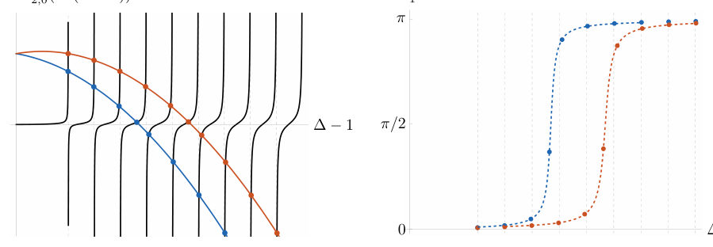
<figcaption class="paper-figure-caption"><b>Fig 5.</b> Figure 5: Spin-one spectra and spectral phase shifts in the Higgsed scalar phase, at α = 10, m = 4, and M 2 W = 127. (a) Intersections of the bubble (black) with −(∆−1)2/α −sκ(∆−1)/(2π) + 2v2 give the boundary dimensions. (b) Resonances in both helicities, with Breit–Wigner fits (3.37) at (∆+ res, Γ+ ∆) ≈ (10.37, 0.49) and (∆− res, Γ− ∆) ≈(14.37, 0.72). Vertical guides mark the generalized-free values ∆= 5 + 2n.</figcaption>
</figure>
</div>

<p><strong>Summary.</strong> This paper analyzes Maxwell-Chern-Simons theory in AdS$_3$ coupled to matter fields, using a large-N expansion approach. It determines the phase diagrams and calculates the boundary spectrum by analyzing the photon propagator. The work is significant for understanding how topological interactions and matter coupling affect the low-energy physics of such gauge theories.</p>
<p><strong>Why it may be interesting.</strong> While focused on gauge theory, the techniques involving large-N expansions, boundary conditions, and the determination of critical points are highly relevant to understanding strongly correlated quantum matter systems.</p>
<details>
<summary>Detailed structure</summary>
<p><strong>Main problem.</strong> The study investigates Maxwell-Chern-Simons theory in AdS$_3$ coupled to various matter fields (scalars or fermions) to map out its phase diagrams and determine the resulting boundary spectrum.</p>
<p><strong>Main result.</strong> The analysis establishes that the protected chiral current persists in fermionic phases for non-zero effective Chern-Simons levels, and it provides large-N Boundary Conformal Field Theory data at bulk conformal points.</p>
<p><strong>Method.</strong> The authors employ large-N expansions, derive the bulk propagator using Dirichlet boundary conditions, and resum matter insertions to find the photon propagator at leading order.</p>
<p><strong>Model / system.</strong> The system is Maxwell-Chern-Simons theory in AdS$_3$, coupled to $N$ complex scalars (with sextic interactions) or Dirac fermions (with Gross-Neveu interactions). The analysis is performed in the large-$N$ limit.</p>
<p><strong>Key observables.</strong> The spin-one boundary spectrum, the photon propagator, and the dimension-one chiral current.</p>
<p><strong>Important parameters / regimes.</strong> The Chern-Simons level ($k$), the large-$N$ scaling parameters ($\kappa=k/N$, $\alpha=Ne^2$), and the effective Chern-Simons level ($k_{	ext{eff}}$).</p>
<p><strong>Assumptions / limitations.</strong> The analysis is strictly performed at large $N$, and it is restricted to operators neutral under the topological symmetry $U(1)_{	ext{top}}$.</p>
<p><strong>Paper structure.</strong> The paper proceeds by first deriving the bulk propagator, then coupling it to matter, analyzing the resulting phase diagrams, and finally extracting BCFT data at conformal points.</p>
</details>
<details>
<summary>Abstract</summary>
<p>We study Maxwell-Chern-Simons theory on AdS$_3$ coupled to $N$ complex scalars or Dirac fermions, including sextic and Gross-Neveu interactions, respectively. First, we derive the bulk Maxwell-Chern-Simons propagator, clarifying how Dirichlet boundary conditions fix the contributions of the massive and flat sectors. Upon coupling to the matter sector, we work at large $N$ with $κ=k/N$ and $α=Ne^2$ fixed, where $k$ is the Chern-Simons level. We determine the corresponding phase diagrams, and we resum matter insertions to obtain the photon propagator at leading order in large $N$, exactly in $α$ and $κ$. Its poles determine the spin-one boundary spectrum, split into two helicity sectors by the Chern-Simons interaction. With Dirichlet boundary conditions, the unHiggsed scalar phase contains a protected chiral current, which is lifted by Higgsing. In the fermionic phases, the current persists for nonzero effective Chern-Simons level, with helicity determined by the induced level shift. At bulk conformal points, we extract large-$N$ BCFT data for the critical and tricritical scalar theories, as well as for the regular fermion and Gross-Neveu theories.</p>
</details>
<p><sub><a href="#top">↑ back to top</a></sub></p>

<p><a id="paper-2610.31359"></a></p>
<h3 id="finite-systems-in-the-space-of-projective-measurements"><a href="http://arxiv.org/abs/2610.31359v1">Finite Systems in the Space of Projective Measurements</a></h3>
<p><strong>Authors:</strong> Miguel Flores R., Carlos A. Muñoz<br>
<strong>Type:</strong> theory · <strong>Category:</strong> quantum information and computing · <strong>PDF:</strong> <a href="https://arxiv.org/pdf/2610.31359v1">https://arxiv.org/pdf/2610.31359v1</a><br>
<strong>Analysis basis:</strong> full PDF text, analyzed in chunks
<strong>Topic relevance:</strong> <code>analog quantum simulation</code> <strong>3/5</strong> · <code>methods for driven-dissipative</code> <strong>3/5</strong> · <code>quantum measurements</code> <strong>2/5</strong> · <code>Keldysh / 2PI / non-Gaussian methods</code> <strong>1/5</strong> · <code>correlated / nonlocal dissipation</code> <strong>1/5</strong> · <code>driven-dissipative phase transition</code> <strong>1/5</strong></p>
<div class="figure-strip-hint">↔ Scroll figures horizontally</div>
<div class="paper-figures-scroll">
<figure class="paper-figure-card">
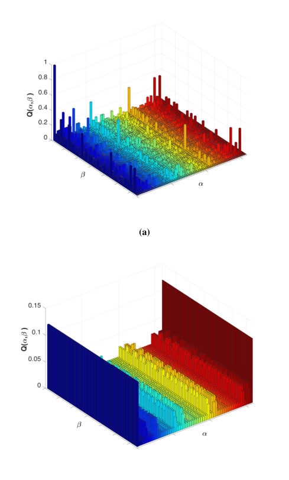
<figcaption class="paper-figure-caption"><b>Fig 1.</b> Figure 2.1: Discrete Q functions for (a) the coherent state |ξ⟩in Eq. (2.7) and (b) the state |GHZ⟩= [|0 · · · 0⟩+ |1 · · · 1⟩]/ √</figcaption>
</figure>
<figure class="paper-figure-card">

<figcaption class="paper-figure-caption"><b>Fig 2.</b> Fig. 2.1 illustrates a disadvantage of studying quantum systems using quasidistributions in discrete space: the display contains an excessive amount of information. This becomes problematic as the particle number increases and collective properties are investigated.</figcaption>
</figure>
<figure class="paper-figure-card">
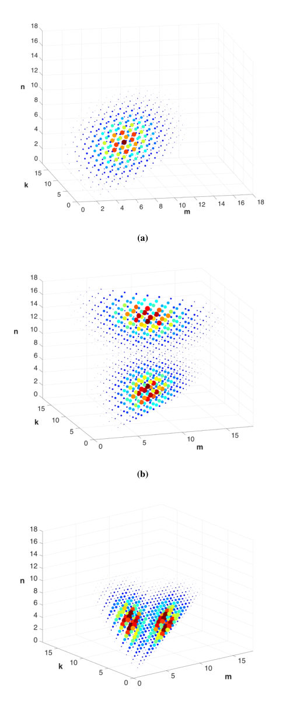
<figcaption class="paper-figure-caption"><b>Fig 3.</b> Figure 2.2: Projected ˜Q(m, n, k) functions for N = 18: (a) the coherent state in Eq. (2.6); (b) |GHZ⟩= [|0 · · · 0⟩+|1 · · · 1⟩]/ √</figcaption>
</figure>
<figure class="paper-figure-card">
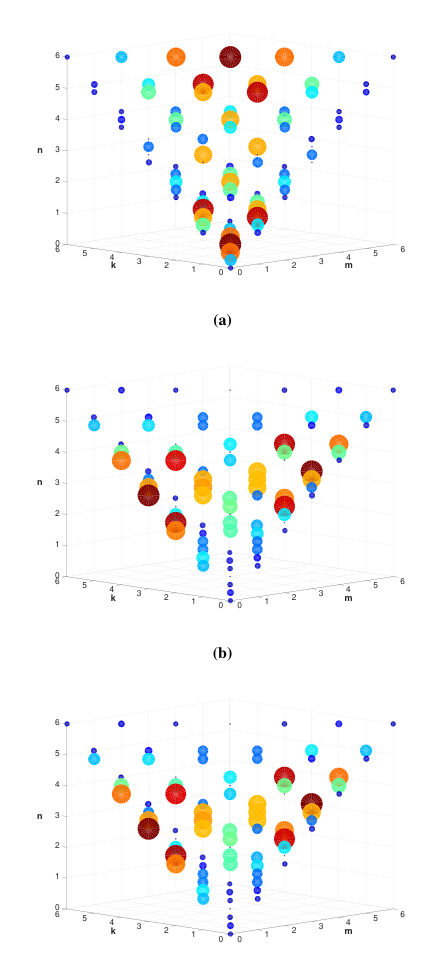
<figcaption class="paper-figure-caption"><b>Fig 4.</b> Figure 4.1: GHZ projected distributions: (a) initial ˜QGHZ at t = 0; (b) approximate evolution at t = 0.6; and (c) exact evolution at t = 0.6, under the Hamiltonian in Eq. (4.2).</figcaption>
</figure>
<figure class="paper-figure-card">

<figcaption class="paper-figure-caption"><b>Fig 5.</b> Fig. 4.2, like Fig. 4.1, compares approximate and exact evolution of the projected Q function, here under Eq. (4.3). Again the two functions are very similar, confirming good performance for a permutation-invariant Hamiltonian and state. The information concentrations move toward the n axis, including a concentration containing more points of high density than at t = 0.</figcaption>
</figure>
</div>

<p><strong>Summary.</strong> This paper develops a method using projected quasidistributions to study the dynamics of large quantum systems, bypassing the need to track individual particle measurements. By approximating the star product, the authors can rewrite the Liouville equation in terms of collective observables. The method proves effective for systems with high symmetry but shows limitations when symmetries are broken.</p>
<p><strong>Why it may be interesting.</strong> This work provides a powerful, symmetry-aware tool to simulate large quantum systems where individual measurements are intractable, making it highly relevant for understanding collective behavior in quantum computation and many-body physics.</p>
<details>
<summary>Detailed structure</summary>
<p><strong>Main problem.</strong> The paper investigates the dynamics of quantum systems, particularly those approaching the macroscopic limit, by focusing on global properties through projected quasidistributions.</p>
<p><strong>Main result.</strong> The proposed method accurately tracks dynamics for permutation-invariant states and Hamiltonians, showing small errors quantified by the Hellinger distance, though deviations appear for non-invariant cases.</p>
<p><strong>Method.</strong> It constructs an approximate analog of the star product for the Q function, projecting the dynamics onto a space of collective measurements defined by Hamming weights.</p>
<p><strong>Model / system.</strong> The study uses two-level systems (N-qubit systems) evolving under Hamiltonians, analyzing the evolution of the density matrix $\hat{\rho}$ via its projected quasidistribution $\tilde{Q}$.</p>
<p><strong>Key observables.</strong> Projected Q function $\tilde{Q}(m, n, k)$, expectation values $\langle\hat{A}\rangle$, and the Hellinger distance used to quantify approximation error.</p>
<p><strong>Important parameters / regimes.</strong> Particle number $N$, time $t$, and the nature of the Hamiltonian (permutation-invariant vs. non-invariant).</p>
<p><strong>Assumptions / limitations.</strong> The core assumption is the necessity of approximating the star product for the Q function to analyze dynamics in the collective measurement space.</p>
<p><strong>Figures summary.</strong> Figures compare approximate vs. exact projected distributions (e.g., for GHZ and coherent states) at various times, and show the Hellinger distance decay over time.</p>
<p><strong>Paper structure.</strong> The paper develops the mathematical framework by defining the projected Q function, deriving the approximate evolution kernel $\Psi$, and finally comparing the resulting dynamics against exact evolution using the Hellinger distance.</p>
</details>
<details>
<summary>Abstract</summary>
<p>We investigate the dynamics of two-level systems using the quasidistribution $Q$ function projected onto the space of collective measurements. Particular attention is given to evolution under Hamiltonians that are invariant under particle permutations, for pure states that are either invariant or noninvariant under such permutations. This requires constructing an approximate analog of the star product between quasidistribution functions: the projected $Q$ function of a product of two operators is expressed approximately in terms of the individual operators' $Q$ and $P$ functions. We rewrite the Liouville equation to determine approximate state dynamics and compare the result with exact evolution using the Hellinger distance. Overall, the method performs well for permutation-invariant pure states and Hamiltonians, whereas deviations arise for arbitrary pure states and noninvariant Hamiltonians.</p>
</details>
<p><sub><a href="#top">↑ back to top</a></sub></p>

<p><a id="paper-2610.31244"></a></p>
<h3 id="optimal-search-strategies-under-finite-resource-constraints-the-role-of-environmental-memory-and-directional-information-in-informed-and-blind-protocols"><a href="http://arxiv.org/abs/2610.31244v1">Optimal Search Strategies under Finite Resource Constraints: The Role of Environmental Memory and Directional Information in Informed and Blind Protocols</a></h3>
<p><strong>Authors:</strong> Hugues Meyer<br>
<strong>Type:</strong> theory · <strong>Category:</strong> statistical mechanics · <strong>PDF:</strong> <a href="https://arxiv.org/pdf/2610.31244v1">https://arxiv.org/pdf/2610.31244v1</a><br>
<strong>Analysis basis:</strong> full PDF text, analyzed in chunks
<strong>Topic relevance:</strong> <code>quantum measurements</code> <strong>3/5</strong> · <code>Keldysh / 2PI / non-Gaussian methods</code> <strong>2/5</strong> · <code>methods for driven-dissipative</code> <strong>2/5</strong> · <code>analog quantum simulation</code> <strong>1/5</strong> · <code>correlated / nonlocal dissipation</code> <strong>1/5</strong> · <code>driven-dissipative phase transition</code> <strong>1/5</strong> · <code>non-equilibrium universality</code> <strong>1/5</strong></p>
<div class="figure-strip-hint">↔ Scroll figures horizontally</div>
<div class="paper-figures-scroll">
<figure class="paper-figure-card">
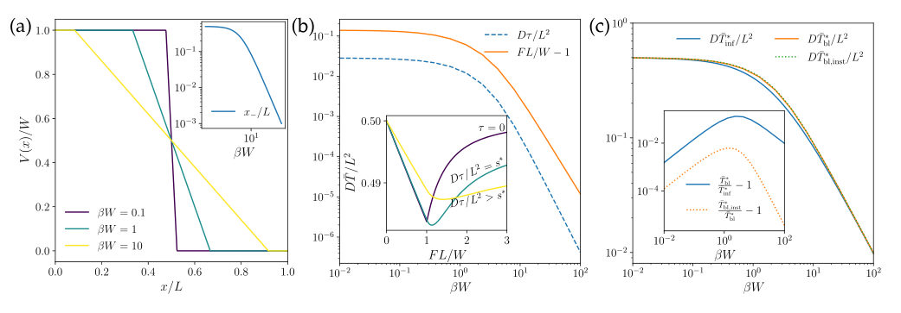
<figcaption class="paper-figure-caption"><b>Fig 1.</b> FIG. 1. External pulling strategies. (a) Optimal force profiles for the informed strategy, for various values of the work budget W. The piecewise linear shape is symmetric around the center of the domain and is demarcated by the threshold positions x− and x+, with x+ = L −x−, which is shown in the inset as a function of the available work budget W. (b) Optimal parameters for the blind strategies, i.e. the switching time τ and pulling force F, as a function of W. As W increases, the switching time tends to zero and the optimal force becomes asymptotically close to W/L. The inset shows the MFPT as a function of the pulling force for various values of the switching time, namely instantaneous...</figcaption>
</figure>
<figure class="paper-figure-card">
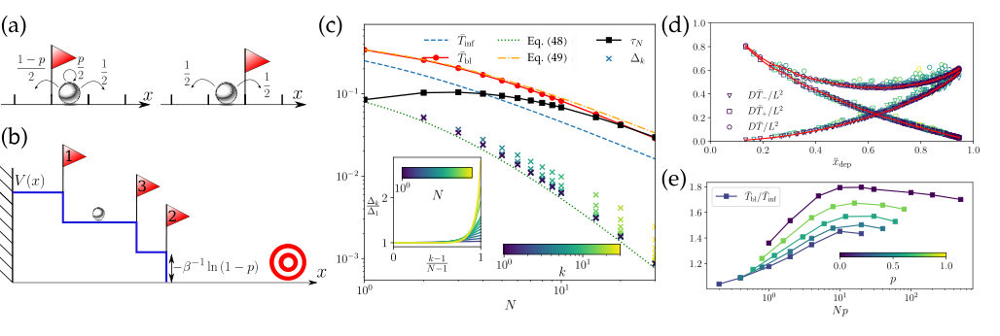
<figcaption class="paper-figure-caption"><b>Fig 2.</b> FIG. 2. Flag deposition strategies. (a) Sketch of the lattice model. The flag acts as partially reflecting objects which redirects the walker towards the target, i.e. greater x values. (b) The lattice model can be mapped in the continuous limit to a diffusive walk in a potential made of discontinuous, downward jumps at the locations of flags. In the blind deposition scheme, for p &lt; 1, the spatial ordering of flags does not necessarily follow the chronological order of depositions. (c) Optimal blind strategies in the totally reflecting case p = 1. The deposition intervals ∆k are almost constant as shown by the crosses which almost all lie on top of each other for a given N, and in the inset...</figcaption>
</figure>
<figure class="paper-figure-card">
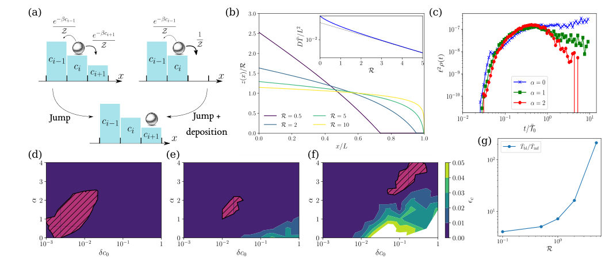
<figcaption class="paper-figure-caption"><b>Fig 3.</b> FIG. 3. Autochemotactic strategies. (a) Sketch of the model, in the informed protocol. The searcher aims to deposit a predetermined amount on each lattice site. From its current site, it jumps to one of the neighbouring sites i±1 with probability ∝e−βci±1. Then, if it is the first time this new site is visited, the searcher deposits the amount ci+1. If not, it does not deposit anything. (b) Optimal cue profiles in the informed strategies, for various values of the normalized initial supply R = βR0. The larger R becomes, the flatter the profile is. The inset shows the optimal MFPT (solid line) with its large-R limit 3 ¯T0e−R/L/2. (c) t2ρ(t), where ρ(t) is the first-passage time distributions...</figcaption>
</figure>
<figure class="paper-figure-card">
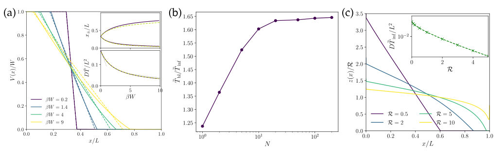
<figcaption class="paper-figure-caption"><b>Fig 4.</b> FIG. 4. (a) Optimal force profiles for a randomly located target in the informed pulling protocol for various values of the work budget. The solid lines show the result obtained with functional optimization while the dotted lines are the optimal piecewise linear profile. The top inset shows the dependence of x± as a function of the work budget in both cases, while the bottom inset shows the optimal mean search time. (b) Ratio ¯¯Tbl/ ¯¯Tinf in the directional flag process for p = 1 for a randomly located target, as a function of the number of flags. It increases and reaches a plateau value at large N. (c) Optimal cue profiles in the informed auto-chemotactic process with a randomly located...</figcaption>
</figure>
</div>

<p><strong>Summary.</strong> This work develops a theoretical framework to optimize search efficiency for a diffusing particle when resources are limited. It rigorously compares 'informed' strategies, which use location-specific knowledge, against 'blind' strategies, which use time-based protocols. The findings show that utilizing environmental memory optimally requires spatially concentrated resource application, significantly outperforming blind resource expenditure.</p>
<p><strong>Why it may be interesting.</strong> The concepts of environmental memory and resource-constrained dynamics are highly relevant to open quantum systems, where environmental coupling acts as a dissipative resource, and optimal control strategies are crucial for quantum state preparation or measurement.</p>
<details>
<summary>Detailed structure</summary>
<p><strong>Main problem.</strong> The paper addresses how to optimize the efficiency of a stochastic search process when the search agent operates under a finite budget of resources.</p>
<p><strong>Main result.</strong> Optimal resource allocation requires concentrating resource usage in narrow spatial regions when information about the search history is available (informed strategy), whereas blind strategies require a steady rate of resource expenditure over time.</p>
<p><strong>Method.</strong> The authors analyze the Mean First Passage Time (MFPT) for various resource models (external force, directional flags, chemotactic cues) by solving the Fokker-Planck equation and applying variational principles.</p>
<p><strong>Model / system.</strong> The model involves a one-dimensional diffusing agent searching for a fixed target, constrained by a finite resource budget (work $W$ or heat $Q$). Resource application can be informed (state-dependent) or blind (time-dependent).</p>
<p><strong>Key observables.</strong> Mean First Passage Time (MFPT), optimal force profiles, and the ratio of MFPTs between informed and blind protocols.</p>
<p><strong>Important parameters / regimes.</strong> Finite work budget ($W$), diffusion constant ($D$), and system length ($L$).</p>
<p><strong>Assumptions / limitations.</strong> The analysis compares protocols based on whether the resource usage depends on the searcher's current/past position (informed) or follows a fixed time schedule (blind).</p>
<p><strong>Figures summary.</strong> Figures illustrate optimal force profiles (piecewise linear) for external pulling strategies and compare MFPTs for informed versus blind protocols.</p>
<p><strong>Paper structure.</strong> The paper systematically compares optimal search strategies under finite resources, first analyzing external pulling forces (Section III), then directional flags (Section IV), and finally generalizing to auto-chemotactic cues, contrasting informed vs. blind protocols throughout.</p>
</details>
<details>
<summary>Abstract</summary>
<p>Improving the efficiency of a stochastic search often requires to provide the searching agent with resources that modify its dynamics and help it explore space more quickly. Although such resources are often assumed to be unlimited and treated as a cost to mitigate, many realistic search processes operate under a finite resource budget, e.g. in processes with environmental memory in which the searcher deposits long-lasting cues along its path that it can interact with at later times to guide its further search. Here, we address the question of how to allocate a limited budget to maximize search efficiency by investigating a one-dimensional diffusing agent whose access to resources is constrained. We consider three resource models, namely an external force applied by an external controller to pull the searcher towards the target, directional flags deposited by the searcher along its path that redirect its motion towards the target, and self-generated chemorepulsive cues that act as a force field. For all these models, we find that resource usage should be concentrated in narrow regions of space when information about the searcher's current and past positions is available. In contrast, in blind strategies where a predefined time protocol is followed, resources should be used at a steady rate to ensure it to be used at most of its capacity by the time it reaches the target. We further show that blind strategies in non-Markovian processes with environmental memory are significantly less efficient due to the inherent fluctuations in the locations of deposited cues.</p>
</details>
<p><sub><a href="#top">↑ back to top</a></sub></p>

<p><a id="paper-2610.30958"></a></p>
<h3 id="active-phase-separation-from-concentration-dependent-diffusion-in-chemical-networks"><a href="http://arxiv.org/abs/2610.30958v1">Active phase separation from concentration-dependent diffusion in chemical networks</a></h3>
<p><strong>Authors:</strong> Giulia Pisegna, Ramin Golestanian<br>
<strong>Type:</strong> theory · <strong>Category:</strong> statistical mechanics · <strong>PDF:</strong> <a href="https://arxiv.org/pdf/2610.30958v1">https://arxiv.org/pdf/2610.30958v1</a><br>
<strong>Analysis basis:</strong> full PDF text, analyzed in chunks
<strong>Topic relevance:</strong> <code>Keldysh / 2PI / non-Gaussian methods</code> <strong>3/5</strong> · <code>methods for driven-dissipative</code> <strong>2/5</strong> · <code>analog quantum simulation</code> <strong>1/5</strong> · <code>correlated / nonlocal dissipation</code> <strong>1/5</strong> · <code>driven-dissipative phase transition</code> <strong>1/5</strong> · <code>non-equilibrium universality</code> <strong>1/5</strong> · <code>quantum measurements</code> <strong>1/5</strong></p>
<div class="figure-strip-hint">↔ Scroll figures horizontally</div>
<div class="paper-figures-scroll">
<figure class="paper-figure-card">
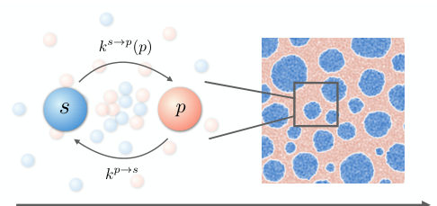
<figcaption class="paper-figure-caption"><b>Fig 1.</b> FIG. 1. Coarse-graining McRD leads to active field theories. The number of chemical species and associated conservation laws determines the emergent coarse-grained dy- namics. A two-species system with non-linear interconversion between substrate s and product p possesses a single con- served field and maps onto AMB+ dynamics, leading to ac- tive phase separation.</figcaption>
</figure>
<figure class="paper-figure-card">
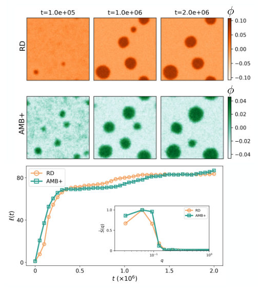
<figcaption class="paper-figure-caption"><b>Fig 2.</b> FIG. 2. Stochastic numerical simulations. Top: snap- shots of the slow mode evolution of the RD and AMB+ trajectories starting from the same initial conditions. Bot- tom: coarsening length scale ℓ(t) in time, inset: static struc- ture factors normalized by their maximum value computed at t = 2×106. Parameters in common: N = 512, L = 64π, dt = 0.025. RD: k = 0.07, p0 = 0.5, Dss 0 = 0.1, Dpp 0 = 0.062, Dpp s = 0.12, Dss p = 0.216, Dn = 10−6, ϕ0 = −0.005. AMB+: r0 = −0.0040, τ0 = −0.3805, u0 = 12.6, K = 0.073, λ = −0.027, ζ = −0.205, κ = −1.62, Dn = 2 × 10−6, ϕ0 = −0.005. The latter parameter measure the distance from the nullcline. Note that, for this set of parameters, a homogeneous state...</figcaption>
</figure>
</div>

<p><strong>Summary.</strong> This paper develops a rigorous, bottom-up theoretical framework to connect microscopic stochastic reaction-diffusion processes to macroscopic active field theories. By systematically eliminating fast degrees of freedom, the authors derive the Active Model B+ (AMB+), showing that genuine non-equilibrium effects like phase separation require specific microscopic asymmetries in diffusion and coupling. This establishes a direct link between chemical network architecture and emergent large-scale collective dynamics.</p>
<p><strong>Why it may be interesting.</strong> While focused on classical statistical mechanics, the methodology of deriving effective field theories from microscopic stochastic dynamics is highly relevant to open quantum systems and non-equilibrium quantum dynamics, providing a blueprint for coarse-graining quantum master equations.</p>
<details>
<summary>Detailed structure</summary>
<p><strong>Main problem.</strong> To derive a direct, bottom-up link between the microscopic stochastic dynamics of chemical reaction-diffusion systems and the continuum description provided by active field theories.</p>
<p><strong>Main result.</strong> The minimal microscopic ingredients generating non-equilibrium behavior, such as concentration-dependent diffusivities and asymmetric cross-diffusion, are identified as necessary for the emergence of active phase separation and arrested coarsening.</p>
<p><strong>Method.</strong> The authors employ a systematic slow-mode reduction technique, involving gradient expansion and the adiabatic elimination of fast variables, to derive the effective continuum equations.</p>
<p><strong>Model / system.</strong> The system is modeled by stochastic mass-conserving reaction-diffusion dynamics for interacting chemical species. The continuum limit is described by the Active Model B+ (AMB+) field theory.</p>
<p><strong>Key observables.</strong> The slow mode ($\phi$) dynamics, which exhibit terms up to $
abla^4\phi$, and the non-equilibrium coefficient ($\zeta$).</p>
<p><strong>Important parameters / regimes.</strong> Concentration-dependent diffusivities ($D_{ab}(u)$) and asymmetric chemotactic couplings.</p>
<p><strong>Assumptions / limitations.</strong> The derivation relies on a quasi-stationary approximation to eliminate the fast mode ($\eta$) and involves truncating the gradient expansion at a certain order.</p>
<p><strong>Figures summary.</strong> Figure 1 illustrates the coarse-graining process from the microscopic reaction-diffusion (McRD) model to the active field theory. Figure 2 shows qualitative agreement between the slow mode evolution ($\phi$) simulated using the microscopic model and the derived AMB+ model.</p>
<p><strong>Paper structure.</strong> The paper systematically derives the effective field theory by performing a slow-mode reduction on the full stochastic dynamics, identifying the necessary microscopic asymmetries that generate the non-equilibrium terms in the final continuum equations.</p>
</details>
<details>
<summary>Abstract</summary>
<p>Active phase separation in living systems is ubiquitous, yet the microscopic origins of the non-equilibrium terms in active field theories remain largely unknown. Here, starting from stochastic mass-conserving reaction-diffusion dynamics of two interacting chemical species, we perform a systematic slow-mode reduction and derive the complete Active Model B+ field theory, with all phenomenological coefficients expressed in terms of microscopic parameters. We identify concentration-dependent diffusivities and asymmetric inter-species chemotactic couplings as the minimal microscopic ingredients generating the genuinely non-equilibrium coefficient responsible for microphase separation, cluster phases, and arrested coarsening. Our framework recovers the equilibrium limit consistently and is validated by stochastic numerical simulations. These results establish a direct, bottom-up link between the architecture of chemical reaction networks and the universality class of their emergent large-scale dynamics.</p>
</details>
<p><sub><a href="#top">↑ back to top</a></sub></p>

<p><a id="paper-2610.31242"></a></p>
<h3 id="fluctuation-free-quantum-battery-charging-enabled-by-bell-like-entangled-and-separable-charger-states"><a href="http://arxiv.org/abs/2610.31242v1">Fluctuation-free Quantum Battery Charging Enabled by Bell-like Entangled and Separable Charger States</a></h3>
<p><strong>Authors:</strong> Longyan Gong, Jing Zhang, Yongtao Li<br>
<strong>Type:</strong> theory · <strong>Category:</strong> quantum information and computing · <strong>PDF:</strong> <a href="https://arxiv.org/pdf/2610.31242v1">https://arxiv.org/pdf/2610.31242v1</a><br>
<strong>Analysis basis:</strong> full PDF text, analyzed in chunks
<strong>Topic relevance:</strong> <code>methods for driven-dissipative</code> <strong>3/5</strong> · <code>quantum measurements</code> <strong>3/5</strong> · <code>analog quantum simulation</code> <strong>1/5</strong> · <code>correlated / nonlocal dissipation</code> <strong>1/5</strong> · <code>driven-dissipative phase transition</code> <strong>1/5</strong> · <code>non-equilibrium universality</code> <strong>1/5</strong></p>
<div class="figure-strip-hint">↔ Scroll figures horizontally</div>
<div class="paper-figures-scroll">
<figure class="paper-figure-card">
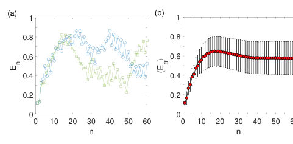
<figcaption class="paper-figure-caption"><b>Fig 1.</b> FIG. 3: (a) Two trajectories of stored energy En. (b) Trajectory-averaged stored energy ⟨En⟩versus collision steps n, with error bars for stored-energy fluctuations σ(En). Pa- rameters: ∆= 0.7 and g = 0.05; γ01 = π/3, γ10 = π/5, and γ11 = π/7; e00 = 0.35, e01 = 0.05, e10 = 0.10, and e11 = 0.5. The corresponding concurrence C = 0.8001.</figcaption>
</figure>
<figure class="paper-figure-card">
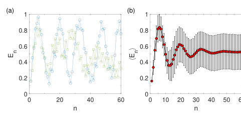
<figcaption class="paper-figure-caption"><b>Fig 2.</b> FIG. 4: (a) Two trajectories of stored energy En. (b) Trajectory-averaged stored energy ⟨En⟩versus collision steps n, with error bars for stored-energy fluctuations σ(En). Pa- rameters: ∆= 0.7 and g = 0.05; γ01 = π/3, γ10 = π/5, and γ11 = 8π/15; e00 = 0.08, e01 = 0.12, e10 = 0.32, and e11 = 0.48. The corresponding concurrence C = 0.</figcaption>
</figure>
</div>

<p><strong>Summary.</strong> This paper investigates how entanglement in the charger qubits affects the charging uniformity of a quantum battery. By analyzing the recurrence relation for stored energy, the authors demonstrate that only specific Bell-like entangled states ensure that energy fluctuations vanish, regardless of the system's internal phases. This provides a concrete theoretical framework for engineering quantum devices to overcome inherent quantum randomness.</p>
<p><strong>Why it may be interesting.</strong> This work directly tackles open quantum systems dynamics, specifically energy transfer and coherence preservation in a controlled, non-equilibrium setting, which is highly relevant to quantum optics and quantum information applications.</p>
<details>
<summary>Detailed structure</summary>
<p><strong>Main problem.</strong> The paper addresses the poorly understood role of entanglement in quantum battery (QB) charging and the fundamental challenge of achieving uniform charging despite intrinsic quantum randomness.</p>
<p><strong>Main result.</strong> The authors found that for specific Bell-like entangled states, the charging dynamics are independent of the battery phase and exhibit vanishing energy fluctuations, establishing a design paradigm for uniform charging.</p>
<p><strong>Method.</strong> The study uses theoretical derivation of recurrence relations for stored energy in a three-qubit system, supplemented by stochastic quantum trajectory simulations.</p>
<p><strong>Model / system.</strong> The model is a three-qubit system in a cascaded collision frame: two qubits act as the charger and the third as the battery. The charging process involves unitary evolution followed by an adaptive measurement on the charger.</p>
<p><strong>Key observables.</strong> Stored energy in the battery ($E_m$), stored-energy fluctuations ($\sigma(E_n)$), and the recurrence relation for stored energy ($E_{n+1}$).</p>
<p><strong>Important parameters / regimes.</strong> Detuning ($\Delta$), effective Rabi frequency ($\Omega$), and the relative phases ($\gamma_n$) associated with the charging process.</p>
<p><strong>Assumptions / limitations.</strong> The analysis focuses on off-resonant cases ($\Delta 
eq 0$) and assumes the ability to perform adaptive measurements to equalize expected stored energies across measurement branches.</p>
<p><strong>Figures summary.</strong> Figures illustrate the average stored energy ($\langle E_n 
angle$) over collision steps for Bell-like-I and Bell-like-II states, confirming deterministic energy buildup and vanishing fluctuations. Other figures contrast these with entangled and separable states showing significant energy fluctuations.</p>
<p><strong>Paper structure.</strong> The paper first establishes the physical model and the requirement for uniform charging via adaptive measurement. It then derives the recurrence relation for stored energy, analyzing its dependence on the battery phase. Finally, it compares the fluctuation behavior across different classes of charger states (Bell-like vs. others) to establish the engineering criterion for uniformity.</p>
</details>
<details>
<summary>Abstract</summary>
<p>The implication of entanglement in quantum battery charging remains poorly understood. In addition, intrinsic quantum randomness poses a fundamental challenge to charging uniformity across distinct trials. To address these issues, we study a three-qubit system within a cascaded collision frame, with two qubits acting as the charger and the third serving as the battery. After each collision, an adaptive measurement is performed on the charger, yielding four conditional post-measurement battery states with identical expected stored energy. For arbitrary fixed charger states, we derive analytical expressions for the recurrence relation of stored energy. We find that stored-energy fluctuations depend on whether the dynamics relies on the battery phase \(γ_n\). For two Bell-like families of entangled states, together with their computational basis states termed Bell-like separable states, the dynamics is \(γ_n\)-independent and fluctuations vanish, whereas for other entangled and separable states, fluctuations emerge. These insights establish a paradigm for engineering charger states to design uniform-charging quantum-battery architectures despite inherent quantum randomness.</p>
</details>
<p><sub><a href="#top">↑ back to top</a></sub></p>

<p><a id="paper-2610.31126"></a></p>
<h3 id="entropy-production-cost-limits-hierarchical-decision-making-in-homing-pigeon-flocks"><a href="http://arxiv.org/abs/2610.31126v1">Entropy-production cost limits hierarchical decision-making in homing pigeon flocks</a></h3>
<p><strong>Authors:</strong> Bibaswan Ghosh, Vipul Rai, Harsh Soni, Nitin Kumar<br>
<strong>Type:</strong> theory · <strong>Category:</strong> statistical mechanics · <strong>PDF:</strong> <a href="https://arxiv.org/pdf/2610.31126v1">https://arxiv.org/pdf/2610.31126v1</a><br>
<strong>Analysis basis:</strong> full PDF text, analyzed in chunks
<strong>Topic relevance:</strong> <code>non-equilibrium universality</code> <strong>3/5</strong> · <code>quantum measurements</code> <strong>2/5</strong> · <code>Keldysh / 2PI / non-Gaussian methods</code> <strong>1/5</strong> · <code>correlated / nonlocal dissipation</code> <strong>1/5</strong> · <code>driven-dissipative phase transition</code> <strong>1/5</strong> · <code>methods for driven-dissipative</code> <strong>1/5</strong></p>
<div class="figure-strip-hint">↔ Scroll figures horizontally</div>
<div class="paper-figures-scroll">
<figure class="paper-figure-card">
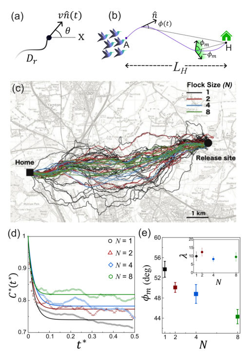
<figcaption class="paper-figure-caption"><b>Fig 1.</b> FIG. 1. (a) Schematic of a two-dimensional active Brownian particle (ABP) moving at a constant speed v, with its ori- entation angle (θ) undergoing a random walk with diffusion constant Dr. (b) A pigeon flock modeled as an ABP, with its angular deviation from the home direction constrained within ±ϕm, facilitating homing. (c) Empirical data from ref. [18] showing homing trajectories become progressively straighter and more efficient with increasing flock size. Image adapted from [18]. (d) The dimensionless velocity autocorre- lation function exhibits an increasing saturation plateau with flock size, reflecting enhanced homing efficiency. Solid lines represent fits to Eq. 1. (e) Fitted...</figcaption>
</figure>
<figure class="paper-figure-card">
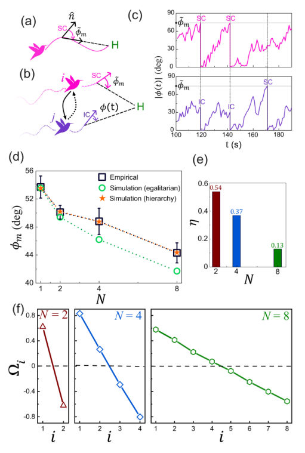
<figcaption class="paper-figure-caption"><b>Fig 2.</b> FIG. 2. (a) Each individual agent undergoes a self-correction (SC) event, resetting its angular deviation from ±˜ϕm to zero. (b) In a flock, an SC event in agent i can also trigger an induced correction (IC) event in agent j, resetting its angu- lar deviation from ±ϕ(t) to zero even when |ϕ(t)| &lt; |˜ϕm|. Solid and dashed curved arrows between birds represent non- reciprocal interactions. (c) Schematic of non-reciprocal com- munication, in which an SC event in one agent induces an IC event in the other with unequal probabilities (Pi ̸= Pj). (d) Egalitarian simulations (Pi = 1 for all i) fail to capture the observed dependence of ϕm on flock size N, whereas the trend is recovered by...</figcaption>
</figure>
<figure class="paper-figure-card">
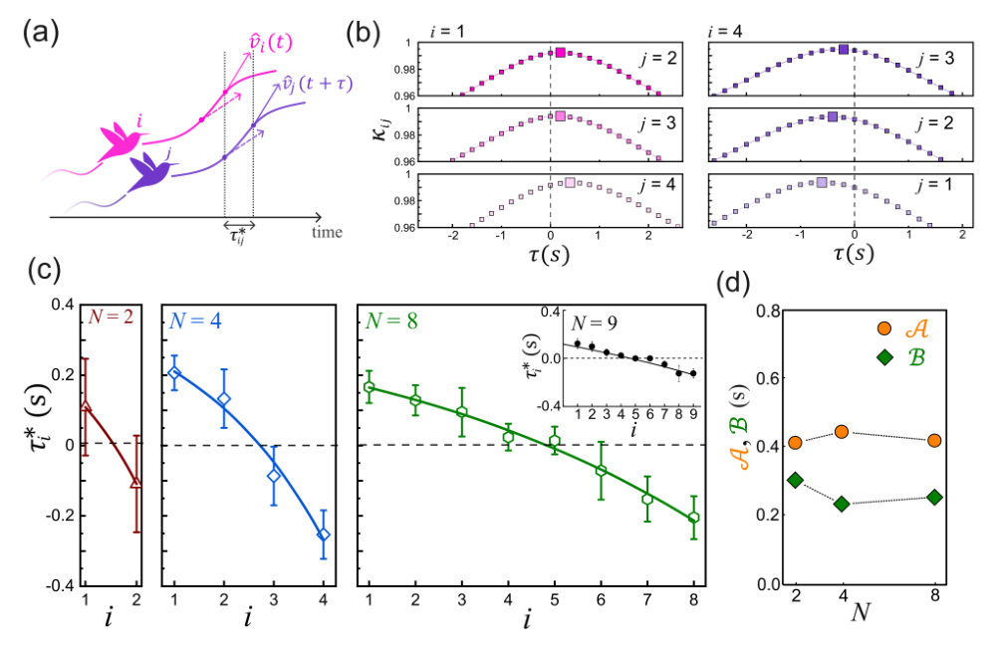
<figcaption class="paper-figure-caption"><b>Fig 3.</b> FIG. 3. (a) Schematic illustrating how bird i induces a directional change in bird j after a characteristic time delay τ ∗ ij. (b) Representative pairwise directional cross-correlation functions, κij(τ). For a leader (i = 1), κij(τ) peaks at positive time delays for all other birds j, with enlarged symbols marking the corresponding τ ∗ ij values. Similar plots for a follower (i = 4) show negative τ ∗ ij values for all other birds. (c) Average delay times, τ ∗ i , for individual agents across different flock sizes N. The delay times remain bounded between well-defined maximum and minimum values (≈±0.25 s), exhibiting a trend qualitatively similar to that in Fig. 2(f). Solid lines represent...</figcaption>
</figure>
<figure class="paper-figure-card">
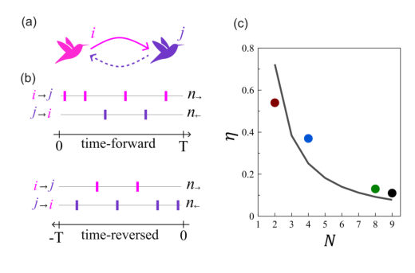
<figcaption class="paper-figure-caption"><b>Fig 4.</b> FIG. 4. (a) A pair of birds i &amp; j, communicating asymmetri- cally with i having greater influence than j. (b) A schematic representing the time-forward and time-reversed histories of IC events, with n→(n←) the number of events from i to j (from j to i); the time-reversed history is less probable. (c) Solid line shows the numerical fit of Eq. (5) to the empirical data points in the case where birds tend to keep ˙s constant (K = 0.004kB), successfully capturing the decreasing trend of η with N.</figcaption>
</figure>
</div>

<p><strong>Summary.</strong> This work models homing pigeon flocks to study how social hierarchy emerges in collective decision-making. It finds that as the flock gets larger, the decision-making becomes more egalitarian, which is explained by a thermodynamic constraint related to the cost of generating information entropy. This suggests that physical limits on information processing capacity govern social organization in living systems.</p>
<p><strong>Why it may be interesting.</strong> The application of non-equilibrium thermodynamics (entropy production) to biological collective behavior provides a powerful, general physical principle that could be adapted to analyze open quantum systems or complex many-body dynamics where energy/information flow is crucial.</p>
<details>
<summary>Detailed structure</summary>
<p><strong>Main problem.</strong> The paper investigates how physical constraints, specifically the information-entropy cost, limit the development and maintenance of social hierarchies in collective decision-making.</p>
<p><strong>Main result.</strong> Hierarchy weakens as flock size increases, which is physically explained by the requirement to maintain a constant per-individual entropy production rate.</p>
<p><strong>Method.</strong> The authors developed a trajectory-based framework and utilized thermodynamic principles to link non-reciprocal communication patterns (hierarchy) to information-entropy costs.</p>
<p><strong>Model / system.</strong> The model uses homing pigeon flocks as a proxy for living collectives, simulating their navigation using Overdamped Active Brownian Particles (ABPs) in 2D.</p>
<p><strong>Key observables.</strong> Hierarchy Index ($\eta$), Tolerance to Navigational Error ($\phi_m$), Entropy Production Rate ($\dot{S}$), and temporal cross-correlation of velocities ($k_{ij}(	au)$).</p>
<p><strong>Important parameters / regimes.</strong> Flock size ($N$), Path Stochasticity ($\lambda$), and the constant per-individual entropy production rate.</p>
<p><strong>Assumptions / limitations.</strong> The core argument assumes that the collective dynamics are constrained by the minimization or maintenance of a constant per-individual entropy production rate.</p>
<p><strong>Figures summary.</strong> Figures illustrate the systematic decrease of $\phi_m$ and $\eta$ with increasing flock size, and show the scaling of the average self-correction rate ($\langle R_0 
angle$) with $N$ as $N^{-0.25}$.</p>
<p><strong>Paper structure.</strong> The paper progresses from defining the problem of social hierarchy in collectives, developing a quantitative framework using ABP models and cross-correlation functions, establishing the link between hierarchy and non-reciprocal communication affinity ($\Omega_{ij}$), and finally grounding this link in a thermodynamic constraint via entropy production rates.</p>
</details>
<details>
<summary>Abstract</summary>
<p>Collective decision-making requires individuals to reconcile diverse, often conflicting opinions to reach a common course of action. However, within a group, they rarely exert equal influence, leading to non-reciprocal communication patterns manifested as leader-follower relationships and social hierarchies. Here, using homing pigeon flocks as a model system, we develop a trajectory-based framework to infer and quantify hierarchy within navigating living collectives. We find that while small flocks exhibit pronounced hierarchy, increasing flock size progressively weakens it, driving the collection toward more egalitarian decision-making. We provide a physical basis of this observation using a thermodynamic framework in which non-reciprocal communication between birds carries an information-entropy cost. Our calculations reveal that hierarchy weakening observed in larger flocks is a direct consequence of maintaining a constant per-individual entropy production rate across flock sizes. Together, these results suggest that constraints on information-processing capacity may play an important role in the collective dynamics of living organisms.</p>
</details>
<p><sub><a href="#top">↑ back to top</a></sub></p>

<p><a id="paper-2610.30846"></a></p>
<h3 id="fit-error-corrected-auxiliary-master-equation-approach-for-low-temperature-nonequilibrium-dynamical-mean-field-theory"><a href="http://arxiv.org/abs/2610.30846v1">Fit-error corrected auxiliary master equation approach for low-temperature nonequilibrium dynamical mean-field theory</a></h3>
<p><strong>Authors:</strong> Sebastian Alois Fuchs, Enrico Arrigoni, Tommaso Maria Mazzocchi<br>
<strong>Type:</strong> theory · <strong>Category:</strong> strongly correlated electrons · <strong>PDF:</strong> <a href="https://arxiv.org/pdf/2610.30846v1">https://arxiv.org/pdf/2610.30846v1</a><br>
<strong>Analysis basis:</strong> full PDF text, analyzed in chunks
<strong>Topic relevance:</strong> <code>Keldysh / 2PI / non-Gaussian methods</code> <strong>3/5</strong> · <code>methods for driven-dissipative</code> <strong>3/5</strong> · <code>correlated / nonlocal dissipation</code> <strong>1/5</strong> · <code>driven-dissipative phase transition</code> <strong>1/5</strong> · <code>non-equilibrium universality</code> <strong>1/5</strong></p>
<div class="figure-strip-hint">↔ Scroll figures horizontally</div>
<div class="paper-figures-scroll">
<figure class="paper-figure-card">
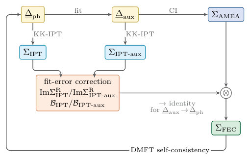
<figcaption class="paper-figure-caption"><b>Fig 1.</b> FIG. 1. Construction of the fit-error corrected SE, Sec. III. The physical hybridization ∆ph provided by the DMFT self- consistency, Eq. (6), is represented by the hybridization ∆aux of a finite auxiliary open system [Eq. (11)], which constitutes the input to the CI solver, giving ΣAMEA. KK-IPT is applied to both hybridizations; the ratio of the imaginary parts of the two KK-IPT retarded self-energies, Eq. (12), and the corre- sponding ratio of their Boltzmann ratios BΣ = FΣ/(1 −FΣ), Eq. (16), constitute the correction, which is applied to ΣAMEA and yields the ΣFEC that closes the DMFT loop. Since both KK-IPT solvers use the same approximation of the same func- tional, the correction...</figcaption>
</figure>
<figure class="paper-figure-card">
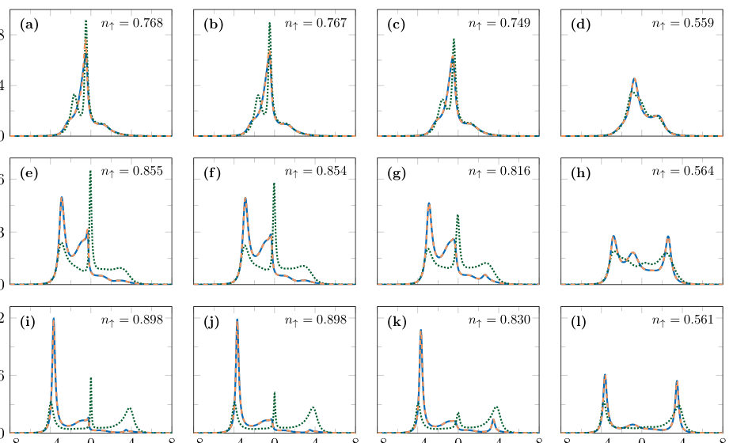
<figcaption class="paper-figure-caption"><b>Fig 2.</b> FIG. 2. Comparison of the solutions to the AIM obtained with plain AMEA, KK-IPT, and FEC-AMEA for the spin-polarized hybridization function of Eq. (20) with ω0 = Γ and εσ = −U/2, in equilibrium at bath temperature T (columns), for different interaction strengths U (rows). Only the majority species is shown because of the symmetry A↓(ω) = A↑(−ω). The spectral functions Aσ(ω) = −Im GR σ (ω)/π are obtained by inserting the SE of each solver into the impurity GF with the physical hybridization, Eq. (8), so as to compare the three schemes on the same footing. The occupation of the majority species reported in each panel is obtained with AMEA. The fit-error corrected AMEA curve is...</figcaption>
</figure>
<figure class="paper-figure-card">
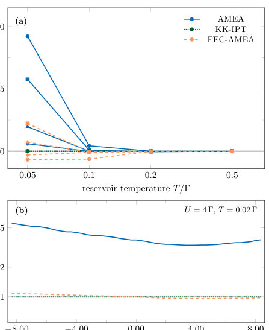
<figcaption class="paper-figure-caption"><b>Fig 3.</b> FIG. 3. Effective temperature of the impurity SE, Eq. (19), divided by the reservoir temperature T, for plain AMEA, KK- IPT, and FEC-AMEA. The grey horizontal lines represent Teff = T. (a) shows Teff/T obtained from the logarithmic slope of the Boltzmann ratio BΣ at ω = 0, as a function of T for U = 2 (circles), 4 (squares), 6 (triangles), and 8 Γ (di- amonds). (b) Frequency-resolved Teff(ω) = −[∂ω ln BΣ(ω)]−1</figcaption>
</figure>
<figure class="paper-figure-card">
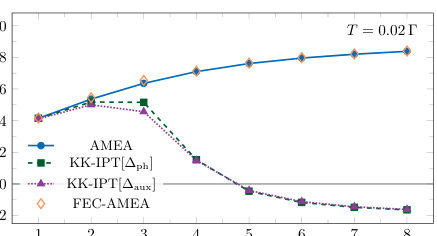
<figcaption class="paper-figure-caption"><b>Fig 4.</b> FIG. 4. (a) Impurity magnetization m = n↑−n↓as a func- tion of U at T = 0.02 Γ, for plain AMEA, KK-IPT evaluated with the physical and with the auxiliary hybridization and FEC-AMEA. Both KK-IPT solutions invert the magnetiza- tion between U/Γ = 4 and 5, while AMEA keeps n↑&gt; n↓ throughout.</figcaption>
</figure>
<figure class="paper-figure-card">
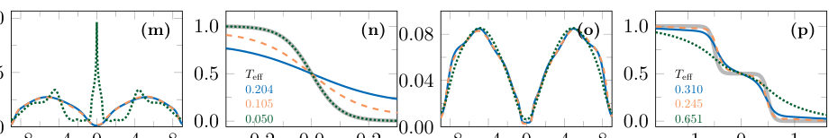
<figcaption class="paper-figure-caption"><b>Fig 5.</b> FIG. 5. Comparison of the converged DMFT solutions for the paramagnetic Hubbard model on the 2D square lattice at half filling, coupled to two reservoirs in the wide-band limit with Γbath = 0.01 t and temperature T = 0.05 t, obtained with plain AMEA, KK-IPT, and FEC-AMEA. Rows correspond to different values of U. The left half shows the equilibrium case, the right half a bias voltage V = t between the two reservoirs, µL/R = ±V/2. Shown are the local spectral function A(ω) = −Im GR loc(ω)/π, Eq. (5), and the distribution function of the SE FΣ(ω), Eq. (14), together with the average distribution function of the two reservoirs (thick grey line). The values of Teff, Eq. (19), are given in the...</figcaption>
</figure>
</div>

<p><strong>Summary.</strong> This paper presents a fit-error corrected auxiliary master equation approach for non-equilibrium DMFT, designed to overcome systematic errors arising from approximating the physical bath with a simpler auxiliary system. By correcting the self-energy using a ratio derived from an approximate solver, the method successfully removes artificial heating effects while maintaining the correct physics of strongly correlated phases like the Mott insulator.</p>
<p><strong>Why it may be interesting.</strong> This work directly addresses the quantitative reliability of non-equilibrium impurity solvers, providing a rigorous correction scheme that improves convergence and physical accuracy in strongly correlated systems, which is crucial for understanding non-equilibrium quantum dynamics.</p>
<details>
<summary>Detailed structure</summary>
<p><strong>Main problem.</strong> To accurately describe correlated electron systems driven into a non-equilibrium steady state by a current or bias, while separating intrinsic non-equilibrium effects from spurious Joule heating.</p>
<p><strong>Main result.</strong> The proposed fit-error correction largely removes spurious heating artifacts from the standard AMEA approach, while successfully preserving the correct description of the Mott insulator regime.</p>
<p><strong>Method.</strong> The method introduces a correction term to the self-energy by estimating the ratio of self-energies derived from the physical versus the auxiliary hybridization function, using an approximate solver like Kajueter-Kotliar iterated perturbation theory (KK-IPT).</p>
<p><strong>Model / system.</strong> The theory is applied to the Anderson impurity model and, within Dynamical Mean-Field Theory (DMFT), to a Hubbard layer weakly coupled to two metallic reservoirs.</p>
<p><strong>Key observables.</strong> Self-energy ($\Sigma$), spectral functions, and the effective temperature (diagnosing spurious heating).</p>
<p><strong>Important parameters / regimes.</strong> Low temperatures ($T 	o 0$), strong local interactions ($U$), and the coupling strength ($\Gamma$).</p>
<p><strong>Assumptions / limitations.</strong> The primary approximation is the use of the auxiliary master equation approach (AMEA), whose accuracy is limited by the fit to the physical hybridization function, which tends to overestimate temperature at low T.</p>
<p><strong>Figures summary.</strong> Not specified.</p>
<p><strong>Paper structure.</strong> The paper builds upon the background of steady-state DMFT and AMEA, introducing the fit-error correction mechanism to systematically improve the self-energy calculation and restore physical constraints like spectral moments.</p>
</details>
<details>
<summary>Abstract</summary>
<p>The auxiliary master equation approach (AMEA) is a nonperturbative impurity solver for steady-state nonequilibrium dynamical mean-field theory (DMFT). It replaces the physical hybridization function by that of a small auxiliary open quantum system, whose parameters are fitted to reproduce it, and then solves the resulting many-body problem essentially exactly. AMEA's accuracy is thus limited by the quality of this fit: since the fastest-varying part of the hybridization is set by the distribution function, whose Fermi edges sharpen at low temperature, the fit tends to overestimate the temperature, especially for weak reservoir coupling. For the auxiliary hybridization itself, however, AMEA's self-energy is essentially exact. We correct for the fit error by estimating, via an approximate solver applicable to arbitrary hybridization functions, the ratio between the self-energies of the physical and auxiliary hybridizations, and using it to extend AMEA's self-energy from the auxiliary to the physical case. This fit-error correction becomes exact whenever either the fit or the approximate solver is exact. We benchmark the scheme using the nonequilibrium Kajueter-Kotliar iterated perturbation theory (IPT), generalized here to spin-polarized solutions, as the approximate solver; other approximate solvers, such as the noncrossing approximation, can be used as well. Applied to an Anderson impurity model with a spin-polarized bath, and within DMFT to a Hubbard layer weakly coupled to two metallic reservoirs, the correction largely removes the spurious heating from the AMEA fit and from insufficient thermalization by the reservoirs, while preserving the correct description of the Mott insulator, which IPT alone cannot fully recover.</p>
</details>
<p><sub><a href="#top">↑ back to top</a></sub></p>

<p><a id="paper-2610.31330"></a></p>
<h3 id="quantum-fokker-planck-solvers-as-trainable-generative-models"><a href="http://arxiv.org/abs/2610.31330v1">Quantum Fokker-Planck solvers as trainable generative models</a></h3>
<p><strong>Authors:</strong> Tariq Mahassen, Marcin Jastrzebski, Oleksandr Kyriienko<br>
<strong>Type:</strong> theory · <strong>Category:</strong> statistical mechanics · <strong>PDF:</strong> <a href="https://arxiv.org/pdf/2610.31330v1">https://arxiv.org/pdf/2610.31330v1</a><br>
<strong>Analysis basis:</strong> full PDF text, analyzed in chunks
<strong>Topic relevance:</strong> <code>methods for driven-dissipative</code> <strong>3/5</strong> · <code>Keldysh / 2PI / non-Gaussian methods</code> <strong>1/5</strong> · <code>analog quantum simulation</code> <strong>1/5</strong> · <code>correlated / nonlocal dissipation</code> <strong>1/5</strong> · <code>driven-dissipative phase transition</code> <strong>1/5</strong> · <code>non-equilibrium universality</code> <strong>1/5</strong> · <code>quantum measurements</code> <strong>1/5</strong></p>
<div class="figure-strip-hint">↔ Scroll figures horizontally</div>
<div class="paper-figures-scroll">
<figure class="paper-figure-card">
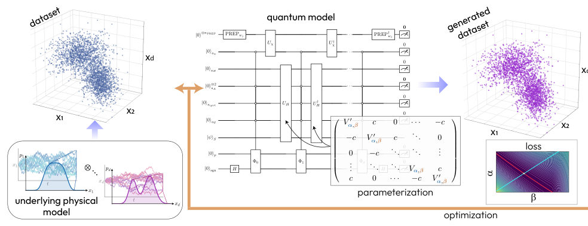
<figcaption class="paper-figure-caption"><b>Fig 1.</b> FIG. 1. Overview of the proposed approach for physics-informed parameterization of quantum generative models and matching empirical distributions. A target physical model leads to stationary-state samples, which constitute a dataset. The trainable architecture uses a highly structured circuit with a small number of trainable parameters (indicated by α, β), which are naturally reuploaded multiple times throughout the QSVT sequence. The loss is evaluated to minimize the distance between generated and empirical distributions, effectively representing quantum model discovery.</figcaption>
</figure>
<figure class="paper-figure-card">
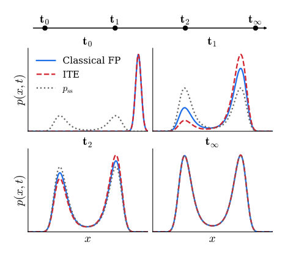
<figcaption class="paper-figure-caption"><b>Fig 2.</b> FIG. 2. Classical Fokker–Planck evolution (solid blue curves) vs imaginary-time evolution (ITE) (dashed red curves) for the distribution generated by the double-well potential V (x) = λ  x2 −a22 (dotted gray curve). Both start from the same narrow Gaussian at t0. At the intermediate times t1 and t2 the two distributions differ, since the dynamics are not equivalent away from stationarity. At late times (t∞) both relax to the same stationary distribution pss.</figcaption>
</figure>
<figure class="paper-figure-card">
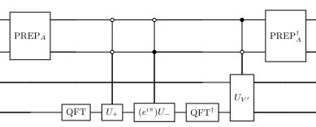
<figcaption class="paper-figure-caption"><b>Fig 3.</b> FIG. 3. LCU block encoding UA of the discretized operator A. The ancilla register aA = (aA,1, aA,2) and |0⟩a2 prepare the LCU amplitudes through PREPA. Shift operators U+ and (eiπ)U−are implemented in the Fourier basis, giving S+−S−. Ancillary register aqsvt is used to perform QSVT to construct UV ′, a block encoding of the non-unitary potential V ′(x). The final PREP† A coherently uncomputes the LCU register, yielding A/αA in the all-zero ancilla block of UA.</figcaption>
</figure>
<figure class="paper-figure-card">
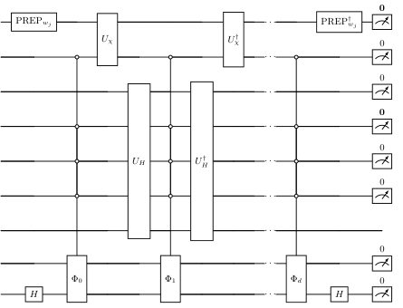
<figcaption class="paper-figure-caption"><b>Fig 4.</b> FIG. 4. QSVT implementation of the weighted cosine trans- formation. The block encodings Uχ and UH are alternated with their adjoints between projector-controlled phase oper- ations Φk. Each Φk acts on the phase ancilla p and sign an- cilla sgn, with projector Π = |0⟩⟨0|aχ ⊗|0⟩⟨0|aqsvt ⊗|0⟩⟨0|aA ⊗ |0⟩⟨0|aG. Conjugating the sign ancilla by Hadamard gates and post-selecting on sgn = 0 coherently extracts the real part, 1 2(eiϕkΠ + e−iϕkΠ), thereby implementing the desired cosine polynomial (see Fig. 12 for further details). Post-selection on aqsvt = 0 selects the QSVT success subspace (see Fig. 10). Finally, PREP† wj and post-selection of the PREP register pro- duce the weighted sum.</figcaption>
</figure>
<figure class="paper-figure-card">
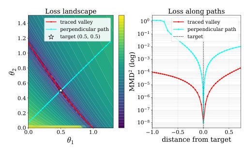
<figcaption class="paper-figure-caption"><b>Fig 5.</b> FIG. 5. MMD2 landscape for a 9-qubit one-dimensional quar- tic model V (x) = θ1</figcaption>
</figure>
</div>

<p><strong>Summary.</strong> This paper introduces a quantum generative model that solves the stationary state of the Fokker-Planck equation by encoding the potential's parameters into a quantum circuit. By utilizing QSVT to simulate imaginary-time evolution, it allows for the efficient training of quantum circuits to reproduce complex, high-dimensional probability distributions found in statistical physics.</p>
<p><strong>Why it may be interesting.</strong> This work provides a novel quantum machine learning tool for characterizing equilibrium states in complex physical systems, directly applicable to non-equilibrium statistical mechanics problems.</p>
<details>
<summary>Detailed structure</summary>
<p><strong>Main problem.</strong> The paper develops quantum generative models to learn probability distributions by solving the stationary state of the Fokker-Planck equation.</p>
<p><strong>Main result.</strong> The proposed framework successfully maps the stationary FP problem to a quantum state preparation problem, enabling training on complex, correlated distributions with efficient, physics-informed optimization.</p>
<p><strong>Method.</strong> It uses Quantum Singular Value Transformation (QSVT) to implement the imaginary-time evolution operator, which projects the system onto the ground state corresponding to the stationary density.</p>
<p><strong>Model / system.</strong> The model is based on an overdamped Langevin process governed by the Fokker-Planck equation. The stationary density is parameterized by a potential $V(\mathbf{x}; oldsymbol{	heta})$, making the model an exponential family distribution.</p>
<p><strong>Key observables.</strong> The stationary probability density $p_{ss}(\mathbf{x})$ and the ability to recover parameters $oldsymbol{	heta}$ for multivariate distributions.</p>
<p><strong>Important parameters / regimes.</strong> The trainable parameters are the coefficients $oldsymbol{	heta}$ defining the potential, which are independent of the grid resolution $N$.</p>
<p><strong>Assumptions / limitations.</strong> The approach assumes the potential can be parameterized by a fixed dictionary (e.g., monomials) and relies on the equivalence between minimizing KL divergence and matching sufficient statistics.</p>
<p><strong>Figures summary.</strong> Figures illustrate the flow from the physical model to the trainable quantum circuit, showing the comparison between classical and quantum evolution towards the stationary state, and detailing the QSVT implementation.</p>
<p><strong>Paper structure.</strong> The paper first establishes the connection between the Langevin process, the FP equation, and the ground state problem. It then details the quantum implementation using Hermitianization, QSVT, and finally shows the training procedure using MMD loss to match empirical distributions.</p>
</details>
<details>
<summary>Abstract</summary>
<p>We develop and analyze generative models based on quantum solvers of stochastic differential equations. Unlike the common approach based on layered variational quantum circuits with parameterized rotations, we parameterize the potential of a Langevin process. The associated Fokker-Planck (FP) equations are Hermitianized and solved using a linear combination of cosine operators implemented through quantum singular value transformation. By encoding the square root of the stationary density, the model enables sampling through computational-basis measurements and is efficiently controlled by coefficients of the block-encoded diagonal potential. We train the proposed model to match empirical distributions within the family described by FP equations, demonstrating parameter recovery for multivariate probability distributions. Crucially, the model remains trainable at scale. Sample-efficient and convex optimization for in-distribution targets arises from a physics-informed inductive bias and holds regardless of the dimensionality of the problem. We provide circuit constructions and efficient block encodings of the main components of the algorithm and analyze resource requirements. Our approach frames quantum generative learning as quantum model discovery and provides a foundation for extending this framework to high-dimensional, strongly correlated scientific data.</p>
</details>
<p><sub><a href="#top">↑ back to top</a></sub></p>

<p><a id="paper-2610.31067"></a></p>
<h3 id="scale-free-localization-in-pseudo-hermitian-quantum-walk"><a href="http://arxiv.org/abs/2610.31067v1">Scale-free localization in pseudo-Hermitian quantum walk</a></h3>
<p><strong>Authors:</strong> Haiting Zhang, Lei Xiao, Cui-Xian Guo, Quan Lin, Peng Xue<br>
<strong>Type:</strong> theory · <strong>Category:</strong> other · <strong>PDF:</strong> <a href="https://arxiv.org/pdf/2610.31067v1">https://arxiv.org/pdf/2610.31067v1</a><br>
<strong>Analysis basis:</strong> full PDF text, analyzed in chunks
<strong>Topic relevance:</strong> <code>driven-dissipative phase transition</code> <strong>3/5</strong> · <code>non-equilibrium universality</code> <strong>3/5</strong> · <code>analog quantum simulation</code> <strong>1/5</strong> · <code>correlated / nonlocal dissipation</code> <strong>1/5</strong> · <code>methods for driven-dissipative</code> <strong>1/5</strong></p>
<div class="figure-strip-hint">↔ Scroll figures horizontally</div>
<div class="paper-figures-scroll">
<figure class="paper-figure-card">
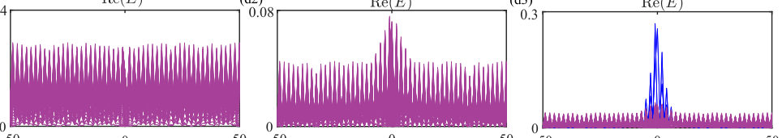
<figcaption class="paper-figure-caption"><b>Fig 1.</b> FIG. 1. (a) Phase diagram of the QW with L = 101. The maximal imaginary eigenvalue (ImE)max as a function of the coin parameters θ and the non-Hermitian strength γ. The red region is the PH-symmetry unbroken phase with ρcom = 0. The blue region is the PH-symmetry broken phase with ρcom = 1. The black solid line marks the phase boundary γc of the PH-symmetry breaking. The black dash-dotted line marks another phase boundary γb characterized by the emergence of bound states. (b) The real and imaginary parts of the eigenvalues are plotted in blue and red, respectively, as functions of γ for θ = π/6. The gray dashed and dash-dotted lines indicate the critical points γc = 1.32 and γb = 2.09 of...</figcaption>
</figure>
<figure class="paper-figure-card">
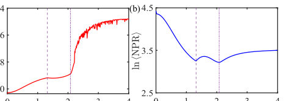
<figcaption class="paper-figure-caption"><b>Fig 2.</b> FIG. 3. (a) Rescaled averaged IPR as a function of γ with L = 201. (b) Rescaled averaged NPR as a function of γ with L = 201. In each panel, the purple dashed and dash- dotted lines mark the critical points γc = 1.32 and γb = 2.09, corresponding to the PH-symmetry breaking transition and the bound-state emergence transition, respectively.</figcaption>
</figure>
<figure class="paper-figure-card">
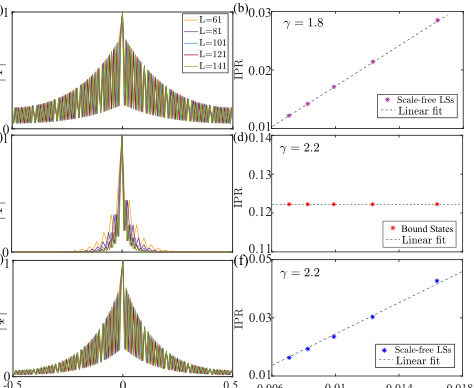
<figcaption class="paper-figure-caption"><b>Fig 3.</b> FIG. 2. Left panels: Rescaled normalized spatial profiles of eigenstates for different system sizes (a) γ = 1.8 (the largest imaginary part), (c) γ = 2.2 (the largest imaginary part), (e) γ = 2.2 (the third-largest imaginary part). The horizontal axis is normalized by L. Right panels: IPR as a function of 1/L corresponding to the left panels (b) scale-free LSs, (d) bound states, (f) scale-free LSs. The black dotted lines denote the linear fit.</figcaption>
</figure>
<figure class="paper-figure-card">
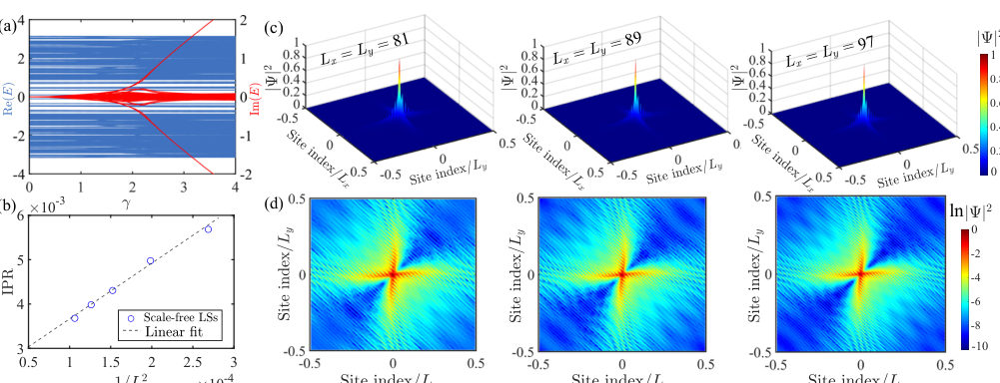
<figcaption class="paper-figure-caption"><b>Fig 4.</b> FIG. 4. (a) The real and imaginary parts of the 2D QW eigenvalues are plotted in blue and red, respectively, as functions of γ for θ = π/6. (b) IPR as a function of 1/L2 for scale-free LSs with the fifth-largest imaginary part. (c) Rescaled normalized spatial profiles of eigenstates for different system sizes. The horizontal axes are normalized by L. (d) Top views of the profiles shown in (c), plotted on a logarithmic scale.</figcaption>
</figure>
</div>

<p><strong>Summary.</strong> This paper studies scale-free localization in non-Hermitian quantum walks, demonstrating that a single defect induces this phenomenon in both 1D and 2D systems. The authors successfully map out two distinct phase transitions—one related to pseudo-Hermitian symmetry breaking and another marking bound state emergence—using advanced localization diagnostics like the Inverse Participation Ratio.</p>
<p><strong>Why it may be interesting.</strong> This work directly addresses localization phenomena in non-Hermitian systems, which is a major area of interest in open quantum systems and topological physics, providing concrete diagnostic tools (like IPR scaling) to characterize novel localized states.</p>
<details>
<summary>Detailed structure</summary>
<p><strong>Main problem.</strong> The paper investigates the phenomenon of scale-free localization in non-Hermitian quantum systems, particularly how it manifests alongside multiple phase transitions.</p>
<p><strong>Main result.</strong> A single non-Hermitian defect induces scale-free localization in both 1D and 2D quantum walks, and the critical points for both the pseudo-Hermitian symmetry breaking and bound state emergence are identified.</p>
<p><strong>Method.</strong> The analysis uses spectral analysis, calculating the Inverse Participation Ratio (IPR) to quantify localization, and identifying phase transitions via singularities in averaged IPR measures.</p>
<p><strong>Model / system.</strong> The model is a quantum walk (QW) system, initially in 1D and extended to 2D, incorporating a single non-Hermitian defect via on-site gain and loss terms.</p>
<p><strong>Key observables.</strong> Scale-free localization (linear scaling of IPR with $1/L$ in 1D, $1/L^2$ in 2D), Pseudo-Hermitian (PH) symmetry breaking, and the emergence of bound states.</p>
<p><strong>Important parameters / regimes.</strong> The non-Hermiticity strength ($\gamma$) is the primary tuning parameter, with critical points identified at $\gamma_c \approx 1.32$ and $\gamma_b \approx 2.09$ (in 1D).</p>
<p><strong>Assumptions / limitations.</strong> The analysis assumes the applicability of localization measures like IPR to distinguish between scale-free states and bound states, and that the system can be modeled by a split-step QW.</p>
<p><strong>Figures summary.</strong> Figures illustrate the phase diagram showing the boundaries for the two transitions ($\gamma_c, \gamma_b$), and compare spatial profiles and IPR scaling for scale-free states versus bound states in 1D QWs.</p>
<p><strong>Paper structure.</strong> The paper first analyzes the 1D QW, detailing the two phase transitions ($\gamma_c$ and $\gamma_b$) using localization diagnostics. It then extends the findings to 2D QWs, confirming the universality of the scale-free localization effect.</p>
</details>
<details>
<summary>Abstract</summary>
<p>Scale-free localization is a distinctive phenomenon in non-Hermitian systems, where specific eigenstates, known as scale-free localized states (LSs), possess localization lengths that scale linearly with the system size. Here, we show that a single non-Hermitian defect in one-dimensional quantum walks (QWs) induces scale-free localization. Driven by non-Hermiticity, the QW system undergoes a pseudo-Hermitian (PH) phase transition and the PH symmetry breaking is accompanied by the emergence of scale-free localization. As non-Hermiticity is further increased, the system undergoes a second phase transition, marked by the emergence of two pairs of bound states. Crucially, we identify the critical points of both transitions using localization properties. Furthermore, we extend our investigation to two-dimensional QWs, where a single non-Hermitian defect also induces scale-free localization, thereby demonstrating the universality of this phenomenon. Our work provides a valuable perspective for further exploring defect physics and a type of novel LS in non-Hermitian quantum systems.</p>
</details>
<p><sub><a href="#top">↑ back to top</a></sub></p>

<p><a id="paper-2610.30257"></a></p>
<h3 id="scalable-neural-wave-functions-via-information-mixing-and-hierarchical-network-architectures"><a href="http://arxiv.org/abs/2610.30257v1">Scalable Neural Wave Functions via Information Mixing and Hierarchical Network Architectures</a></h3>
<p><strong>Authors:</strong> Faith Oyedemi, Stefanie Czischek<br>
<strong>Type:</strong> theory · <strong>Category:</strong> disordered systems and neural networks · <strong>PDF:</strong> <a href="https://arxiv.org/pdf/2610.30257v1">https://arxiv.org/pdf/2610.30257v1</a><br>
<strong>Analysis basis:</strong> full PDF text, analyzed in chunks
<strong>Topic relevance:</strong> <code>Rydberg arrays</code> <strong>3/5</strong> · <code>analog quantum simulation</code> <strong>3/5</strong> · <code>methods for driven-dissipative</code> <strong>2/5</strong></p>
<div class="figure-strip-hint">↔ Scroll figures horizontally</div>
<div class="paper-figures-scroll">
<figure class="paper-figure-card">
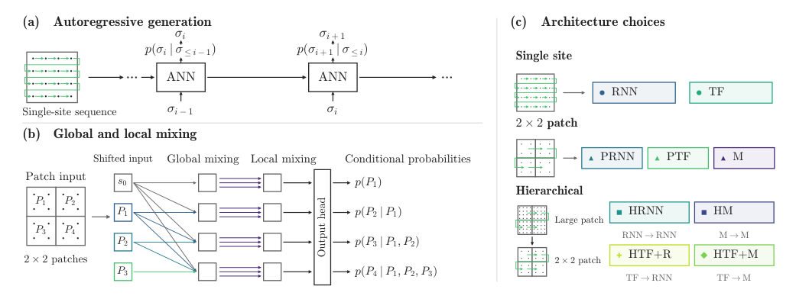
<figcaption class="paper-figure-caption"><b>Fig 1.</b> Figure 1. Categorization of ANN architectures used throughout this work. (a) All ANN architectures operate in an autoregres- sive manner. A sequence of quantum particles is defined in a two-dimensional array using row-major ordering. The state σi of a particle is used as individual input to the ANN, which outputs a probability distribution p (σi+1 |σ≤i ) from which the state σi+1 of the next particle in the sequence is sampled. The condition on previous sequence elements is naturally encoded in the ANN architectures and can capture correlations in quantum systems. (b) The MLP mixer model uses feed-forward operations to mix information across the input system. Receiving a sequence of patches...</figcaption>
</figure>
<figure class="paper-figure-card">
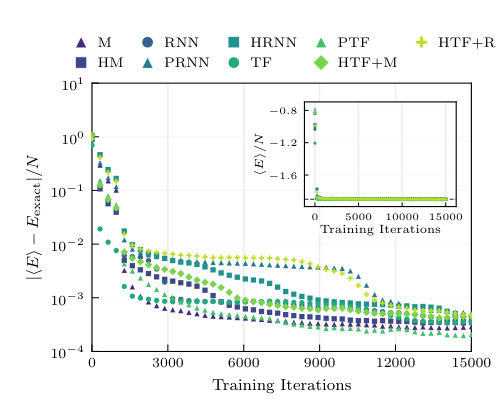
<figcaption class="paper-figure-caption"><b>Fig 2.</b> Figure 2. Search for TFIM ground states in an 8 × 8-site lat- tice at h = 1.0. The nine different ANN architectures (differ- ent colors) are variationally trained to represent the ground state. The main plot shows the evolution of the absolute energy-density error |⟨E⟩−Eexact| /N for all ANN architec- tures during training for 15,000 iterations where we compare to the exact ground state energy density obtained via tensor network simulations [52]. The inset shows the corresponding energy density ⟨E⟩/N, where all data points start to overlap quickly with the exact energy indicated by a black horizon- tal line. Data points correspond to averages of the preceding 1000 training iterations....</figcaption>
</figure>
<figure class="paper-figure-card">
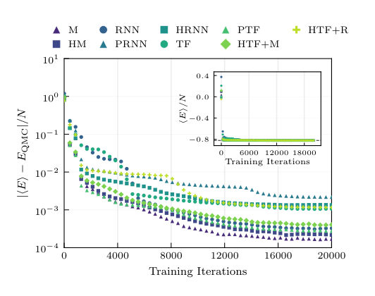
<figcaption class="paper-figure-caption"><b>Fig 3.</b> Figure 3. Search for ground states of 8 × 8 Rydberg atom ar- rays in the checkerboard phase at δ = 2. The training behav- ior over 20,000 iterations is benchmarked on energy values ob- tained via quantum Monte Carlo simulations [55] for the nine considered ANN architectures (different colors). The main plot shows the absolute energy-density error |⟨E⟩−EQMC| /N as a function of the training iterations, while the inset shows the corresponding energy density values ⟨E⟩/N. Data points correspond to averages over the 1000 preceding training it- erations. Hierarchical ANN architectures use initial input patches of 4 × 4 atoms. All ANN architectures quickly con- verge to accurate ground state...</figcaption>
</figure>
<figure class="paper-figure-card">
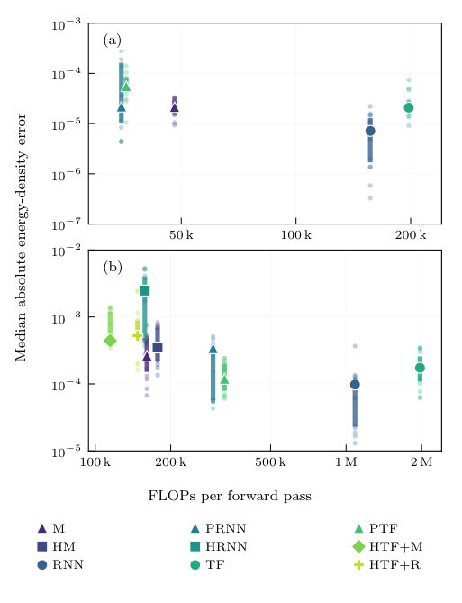
<figcaption class="paper-figure-caption"><b>Fig 4.</b> Figure 4. Median absolute energy-density error as a func- tion of compute resources for the two-dimensional TFIM Hamiltonian. We evaluate the absolute energy-density error |⟨E⟩−Eexact| /N at three points in the phase diagram (h = 1, h = 3.044, h = 5) after 15,000 training iterations for the different network architectures. Each data point shows the median of the energy density error evaluated over the three points in the phase diagram and five independent training runs as a function of the computational efficiency evaluated as FLOPs in a single forward pass. Panel (a) shows results for a system of 4 × 4 sites, while panel (b) considers a system of 8 × 8 sites. Solid data points denote the...</figcaption>
</figure>
<figure class="paper-figure-card">
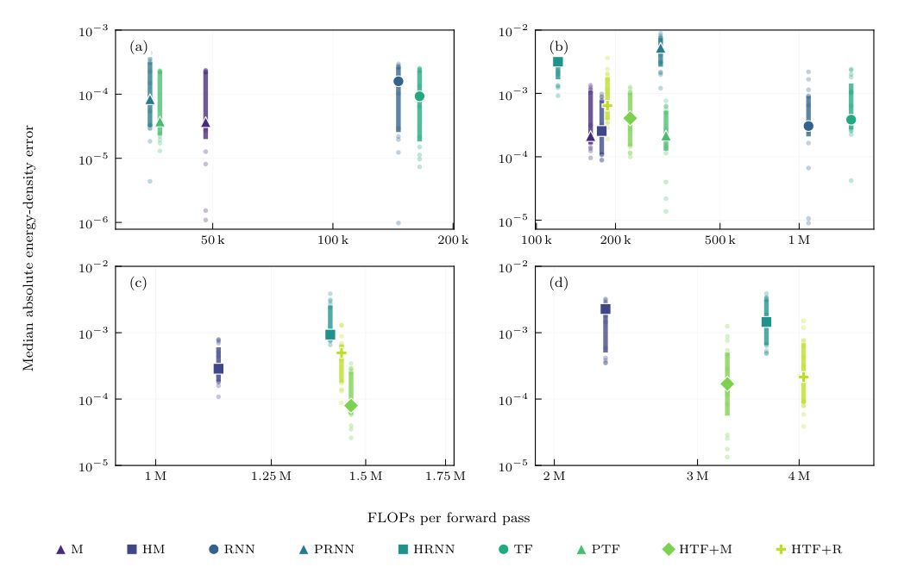
<figcaption class="paper-figure-caption"><b>Fig 5.</b> Figure 5. Median absolute energy-density error as a function of compute resources for Rydberg atom arrays. We compare the median of the absolute energy-density error |⟨E⟩−EQMC| /N after 20,000 training iterations for N = 4 × 4, N = 8 × 8, and N = 16 × 16 and after 25,000 training iterations for N = 24 × 24, evaluated over three points in the phase diagram (δ = 0.4, δ = 1.2, δ = 2) for the different considered ANN architectures (different colors). Each median is furthermore calculated over five independent training runs and plotted as a function of the required FLOPs per forward pass. Individual panels show results for arrays of 4 × 4 atoms [panel (a)], 8 × 8 atoms [panel (b)], 16 × 16 atoms...</figcaption>
</figure>
</div>

<p><strong>Summary.</strong> This paper tackles the computational intractability of simulating large quantum many-body systems by employing neural network wave function ansätze. The authors introduce an MLP mixer architecture designed to efficiently capture long-range quantum correlations. They demonstrate that this new model, especially when combined hierarchically with Transformers, achieves state-of-the-art performance on systems like Rydberg arrays and the TFIM.</p>
<p><strong>Why it may be interesting.</strong> It directly addresses the scalability bottleneck in simulating complex quantum matter by proposing a computationally efficient yet powerful neural network ansatz for wave function representation.</p>
<details>
<summary>Detailed structure</summary>
<p><strong>Main problem.</strong> The central challenge is numerically simulating quantum many-body systems due to the exponential growth of the Hilbert space.</p>
<p><strong>Main result.</strong> The proposed MLP mixer architecture performs competitively with state-of-the-art models and, when hierarchically combined with Transformers, outperforms them for large-scale quantum systems.</p>
<p><strong>Method.</strong> The authors use parameterized wave functions derived from various Artificial Neural Network (ANN) ansätze to approximate the ground state.</p>
<p><strong>Model / system.</strong> The work benchmarks on two-dimensional quantum many-body systems, specifically the transverse-field Ising model (TFIM) and arrays of Rydberg atoms on square lattices.</p>
<p><strong>Key observables.</strong> Representational accuracy, computational efficiency (FLOPs), and the absolute energy-density error compared to exact/QMC results.</p>
<p><strong>Important parameters / regimes.</strong> System sizes up to $24 	imes 24$ lattices, and physical parameters like coupling strengths ($J, h, \Omega, \delta$).</p>
<p><strong>Assumptions / limitations.</strong> The primary assumption is that the wave function can be accurately represented by a structured ANN ansatz, and the MLP mixer is proposed to balance long-range correlation capture with low computational cost.</p>
<p><strong>Figures summary.</strong> Figures categorize various ANN architectures (autoregressive, MLP mixer) and show the evolution of energy error for different models across varying lattice sizes.</p>
<p><strong>Paper structure.</strong> The paper introduces the problem, compares existing ANN architectures (RNN, Transformer), proposes the MLP mixer, benchmarks its performance against state-of-the-art models on TFIM and Rydberg systems, and concludes with a hierarchical combination strategy.</p>
</details>
<details>
<summary>Abstract</summary>
<p>Numerically simulating quantum many-body systems is one of the central challenges in modern physics, as the exponential growth of the Hilbert space with system size renders large-scale exact solutions intractable. Over the past decade, generative artificial neural networks have emerged as powerful wave function ansätze that have powered advances in finding ground state representations, reconstructing quantum states from data, and modeling dynamics in quantum many-body systems. While recurrent neural networks (RNNs) are computationally efficient, the recurrent nature can limit their capacity to capture long-range correlations. Transformer models with their underlying self-attention mechanism excel at capturing these long-range correlations, but incur increased computational requirements, restricting applications to small physical systems. In this work, we address these limitations by exploring the multi-layer perceptron (MLP) mixer model as a wave function ansatz. By mixing information globally and locally through the system via a computationally lightweight mixing strategy, this architecture promises to combine the ability to capture long-range correlations with low computational costs. We benchmark the model on finding ground state representations of two-dimensional quantum many-body systems in various phases of matter and investigate the behavior of representational accuracy and computational efficiency for different physical system sizes. By comparing its performance to RNNs and transformer models with single-site and patched input definitions, we demonstrate that the MLP mixer architecture performs competitively with state-of-the-art network models. We further show that a hierarchical combination of this model with the transformer model outperforms other state-of-the-art architectures for large-scale quantum systems, opening new avenues for investigating quantum phases of matter.</p>
</details>
<p><sub><a href="#top">↑ back to top</a></sub></p>

<p><a id="paper-2610.30281"></a></p>
<h3 id="charge-density-waves-and-in-gap-states-in-coupled-chains-and-moire-superlattices"><a href="http://arxiv.org/abs/2610.30281v1">Charge Density Waves and In-Gap States in Coupled Chains and Moiré Superlattices</a></h3>
<p><strong>Authors:</strong> Muhammad Akram, Onur Erten<br>
<strong>Type:</strong> theory · <strong>Category:</strong> strongly correlated electrons · <strong>PDF:</strong> <a href="https://arxiv.org/pdf/2610.30281v1">https://arxiv.org/pdf/2610.30281v1</a><br>
<strong>Analysis basis:</strong> full PDF text, analyzed in chunks
<strong>Topic relevance:</strong> <code>Frenkel-Kontorova</code> <strong>3/5</strong> · <code>analog quantum simulation</code> <strong>3/5</strong> · <code>methods for driven-dissipative</code> <strong>1/5</strong></p>
<div class="figure-strip-hint">↔ Scroll figures horizontally</div>
<div class="paper-figures-scroll">
<figure class="paper-figure-card">
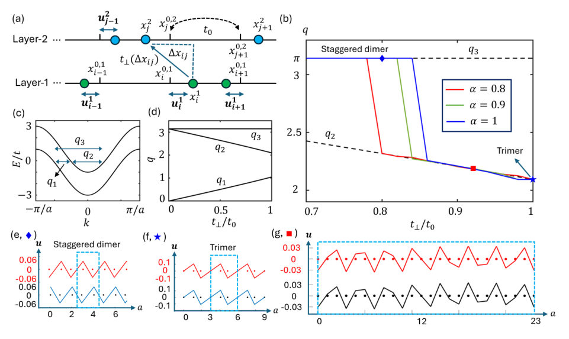
<figcaption class="paper-figure-caption"><b>Fig 1.</b> Figure 1: Emergent charge density wave (CDW) phases in lattice-matched chains. (a) Illustration of the model highlighting intrachain tunneling t0, interchain tunneling t⊥, lattice distortions ui, and in-plane displacement ∆xij = x1 i −x2 j between the atoms i and j in the two chains. (b) Ground-state phase diagram in the (t⊥/t0, α/t0) plane, revealing a wide range of CDW phases, including the staggered-dimer and trimer phases. (c) Energy spectrum E(k) of coupled chains with nearest-neighbor interchain tunneling, in the absence of dimerization. The characteristic wave vectors q1, q2, and q3 = q1 + q2 are defined from the corresponding Fermi points, as indicated. (d) Evolution of the...</figcaption>
</figure>
<figure class="paper-figure-card">
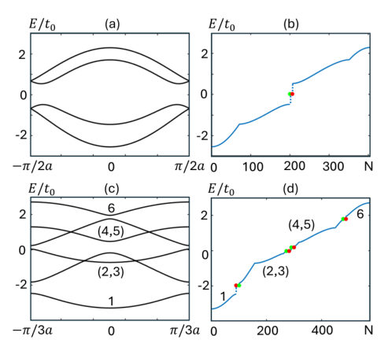
<figcaption class="paper-figure-caption"><b>Fig 2.</b> Figure 2: Band structure and real-space (open-boundary) energy spectrum for staggered- dimer and trimer phases. (a,b) Staggered-dimer at t⊥/t0 = 0.5, α = 1, showing bulk bands and localized edge in-gap states at the opposite boundaries (red and green). (c,d) Trimer (λ3) at t⊥/t0 = 1, α = 1, with edge states localized at opposite boundaries (green and red circles).</figcaption>
</figure>
<figure class="paper-figure-card">
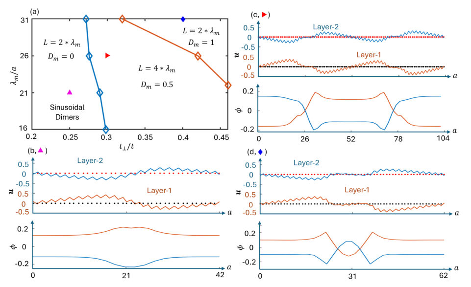
<figcaption class="paper-figure-caption"><b>Fig 3.</b> Figure 3: Emergent charge density wave (CDW) phases in mismatched coupled chains. (a) Phase diagram of the CDW phases as a function of the interchain tunneling t⊥/t0 and moir´e period λm/a, showing supermoir´e phases with emergent periodicities L = 2λm, 4λm, and 2λm. Here, Dm denotes the defect density within a moir´e unit of length λm. (b) Supermoir´e phase with L = 2λm and Dm = 0 at t⊥/t0 = 0.25 and λm = 21a. (c) Supermoir´e phase with L = 4λm and Dm = 0.5 at t⊥/t0 = 0.3 and λm = 26a. (d) Supermoir´e phase with L = 2λm and Dm = 1 at t⊥/t0 = 0.4 and λm = 31a. In (b-d), the top panels show the site displacements relative to the mean lattice position, while the bottom panels show the...</figcaption>
</figure>
<figure class="paper-figure-card">
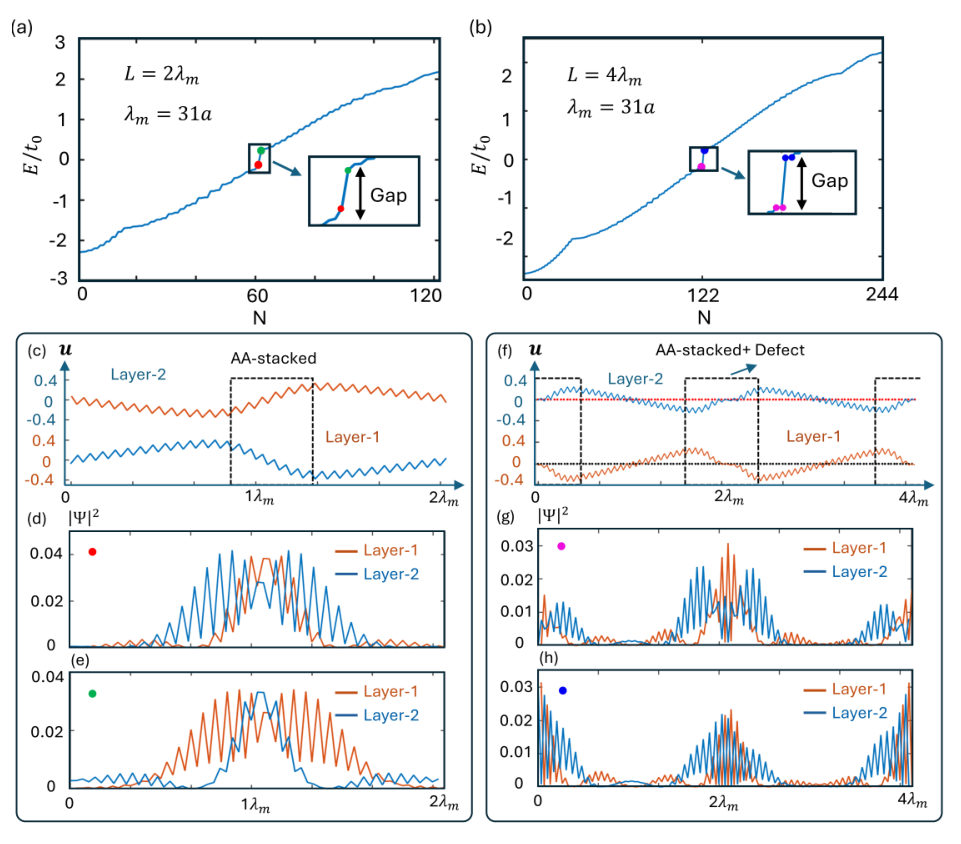
<figcaption class="paper-figure-caption"><b>Fig 4.</b> Figure 4: Electronic band structure and real-space probability density profiles of super-moir´e CDW phases in mismatched coupled chains. (a) Band structure of the L = 2λm super-moir´e phase at t⊥/t0 = 0.25 and λm = 31a. The spectrum is gapped, with red markers indicating states near the band edges corresponding to modes localized at defect sites. (b) Band structure of the L = 4λm super-moir´e phase at t⊥/t0 = 0.3 and λm = 31a, also showing a gapped spectrum with states near the band edges exhibiting similar spatial localization. (c) Spatial profile of the L = 2λm super-moir´e phase. (d, e) Probability density of representative states (62 and 63), showing localization at the defect position...</figcaption>
</figure>
<figure class="paper-figure-card">

<figcaption class="paper-figure-caption"><b>Fig 5.</b> Figure 1: Evolution of the energy gap as a function of interchain tunneling t⊥/t0 for the staggered- and AA-stacked dimer phases at α/t0 = 0.8.</figcaption>
</figure>
</div>

<p><strong>Summary.</strong> This work explores Charge Density Wave formation in coupled quantum chains, extending the model to Moiré superlattices. It demonstrates that interchain coupling and lattice mismatch act as critical control parameters, stabilizing various CDW phases. These phases host localized, symmetry-protected in-gap electronic states whose properties are dictated by the underlying moiré periodicity.</p>
<p><strong>Why it may be interesting.</strong> The explicit connection between structural periodicity (Moiré superlattice) and the emergence of topologically protected, localized electronic states via CDW formation is highly relevant to understanding correlated electron physics in engineered quantum materials.</p>
<details>
<summary>Detailed structure</summary>
<p><strong>Main problem.</strong> The study investigates Charge Density Waves (CDWs) and the nature of localized in-gap electronic states arising from the interplay between electron-phonon coupling and lattice distortions in coupled chains.</p>
<p><strong>Main result.</strong> The system exhibits a sequence of CDW phases (e.g., staggered-dimer, trimer) whose structure is tunable by interchain tunneling and lattice mismatch, leading to localized states in supermoiré superlattices.</p>
<p><strong>Method.</strong> The analysis employs theoretical modeling using the Su-Schrieffer-Heeger Hamiltonian, solved via Monte Carlo simulations and electronic structure diagonalization to map out phase diagrams and band structures.</p>
<p><strong>Model / system.</strong> The model consists of coupled Su-Schrieffer-Heeger (SSH) chains, analyzed in both lattice-matched and lattice-mismatched Moiré superlattice geometries. The Hamiltonian includes terms for intrachain distortion and interchain hopping.</p>
<p><strong>Key observables.</strong> CDW phases (staggered-dimer, trimer), topological invariants (inversion invariant, winding number), energy gap size, and the spatial localization of in-gap electronic states.</p>
<p><strong>Important parameters / regimes.</strong> Interchain tunneling ($t_{\perp}$), electron-phonon coupling ($\alpha$), and the lattice mismatch parameter ($\lambda_m$) which defines the Moiré length scale.</p>
<p><strong>Assumptions / limitations.</strong> Phonons are treated as classical variables, and the interchain tunneling decay is modeled exponentially based on the displacement field.</p>
<p><strong>Figures summary.</strong> Figures illustrate phase diagrams showing CDW stability vs. coupling parameters, band structures revealing gap opening, and real-space probability densities confirming the localization of in-gap states within the supermoiré unit cell.</p>
<p><strong>Paper structure.</strong> The paper systematically analyzes the CDW phases in simple coupled chains, then extends the analysis to the more complex, tunable regime of Moiré superlattices, detailing how lattice mismatch reconstructs the CDW order and dictates the nature of the localized electronic states.</p>
</details>
<details>
<summary>Abstract</summary>
<p>Charge density waves (CDWs) arise from the interplay between electrons and lattice distortions and are a hallmark of low-dimensional systems. Here we study coupled Su-Schrieffer-Heeger chains, both lattice-matched ladders and lattice-mismatched moiré superlattices, and find a rich set of CDW phases together with symmetry-protected bound states. In lattice-matched chains, the competition between electron-phonon coupling and interchain tunneling drives a sequence of CDW phases, including staggered dimers, trimers, and incommensurate states. These phases are generally gapped and host bound states protected by crystalline symmetries rather than chiral symmetry, and are therefore not pinned to zero energy. Lattice mismatch further reconstructs these phases into long-period supermoiré CDWs, with an ordered array of defects, pinned to the moiré length scale, that host localized electronic states. Interchain tunneling and lattice mismatch thus emerge as natural control parameters for CDW order and bound states in one-dimensional chains.</p>
</details>
<p><sub><a href="#top">↑ back to top</a></sub></p>

<p><a id="paper-2610.30462"></a></p>
<h3 id="distributed-dual-comb-spectroscopy"><a href="http://arxiv.org/abs/2610.30462v1">Distributed dual-comb spectroscopy</a></h3>
<p><strong>Authors:</strong> Haowei Shi, Kartikeya Arora, Zheshen Zhang, Quntao Zhuang<br>
<strong>Type:</strong> theory · <strong>Category:</strong> other · <strong>PDF:</strong> <a href="https://arxiv.org/pdf/2610.30462v1">https://arxiv.org/pdf/2610.30462v1</a><br>
<strong>Analysis basis:</strong> full PDF text, analyzed in chunks
<strong>Topic relevance:</strong> <code>interference shaping light</code> <strong>3/5</strong> · <code>quantum measurements</code> <strong>3/5</strong> · <code>quantum optics experiment</code> <strong>1/5</strong></p>
<div class="figure-strip-hint">↔ Scroll figures horizontally</div>
<div class="paper-figures-scroll">
<figure class="paper-figure-card">

<figcaption class="paper-figure-caption"><b>Fig 1.</b> Figure 1. (a) Dual comb spectroscopy with a heterodyne receiver; (b) Quantum comb interferometry (QCI) based on a Mach-Zehnder interferometer; (c) Distributed QCI for K samples, where the K inputs are entangled via a beamsplitter at input sides A and B, respectively.</figcaption>
</figure>
<figure class="paper-figure-card">

<figcaption class="paper-figure-caption"><b>Fig 2.</b> Figure 2. K-sample gas-gradient sensing, illustrated for K = 4. (a) Identical local cells sample the gas field at xℓ= x0 + ℓ∆x along x, while each optical path has a fixed length dcell along z ⊥x. Each distributed DCS node returns the local field transmissivity τ (ℓ). (b) Weak-gradient model and normalized optimal weights. The total-power optimum uses only the endpoints, whereas uniform per-sample power gives the least-squares slope. Blue and red indicate positive and negative estimator weights, respectively.</figcaption>
</figure>
<figure class="paper-figure-card">

<figcaption class="paper-figure-caption"><b>Fig 3.</b> Figure 3. Distribution tradeoff for multiple gases. (a) One example of the setting: gas 1 is a diffuse background, whose average we take as a reference, while gas 2 escapes from a leaking tank and we want its gradient in order to locate the leak. The same treatment applies to any pair of linear functionals θ(g) = P</figcaption>
</figure>
<figure class="paper-figure-card">

<figcaption class="paper-figure-caption"><b>Fig 4.</b> Figure 4. (a) Dual comb spectroscopy with a division re- ceiver; (b) QCI yielding the ratios ˆrs and ˆrr; (c) Distributed QCI for K samples</figcaption>
</figure>
<figure class="paper-figure-card">

<figcaption class="paper-figure-caption"><b>Fig 5.</b> Figure 5. (a) Quantum comb interferometry (QCI) based on a Mach-Zehnder interferometer, without heterodyne detec- tion; (b) Distributed QCI for K samples, with the K outputs combined by a beamsplitter before the heterodyne detection.</figcaption>
</figure>
</div>

<p><strong>Summary.</strong> This paper introduces distributed dual-comb spectroscopy, a quantum-enhanced sensing technique that uses a single distributed squeezed frequency comb across multiple interferometers. It theoretically demonstrates that this approach significantly improves the signal-to-noise ratio for measuring global spectroscopic properties compared to classical or independently sourced quantum methods. The work establishes a scalable quantum route for broadband, multi-site sensing.</p>
<p><strong>Why it may be interesting.</strong> This work provides a detailed quantum-enhanced measurement protocol for distributed sensing, which is highly relevant to quantum optics and open quantum systems, particularly in developing scalable quantum sensors.</p>
<details>
<summary>Detailed structure</summary>
<p><strong>Main problem.</strong> The paper aims to improve the extraction of global spectroscopic information across broadband frequency ranges by simultaneously exploiting spatial and spectral entanglement in distributed sensing.</p>
<p><strong>Main result.</strong> The proposed distributed quantum spectroscopy scheme achieves enhanced signal-to-noise performance using only a single distributed quantum resource, outperforming spatially separable quantum strategies.</p>
<p><strong>Method.</strong> The analysis uses quantum optical techniques involving two-mode squeezed frequency combs distributed across a network of Mach-Zehnder interferometers (MZIs) to model and estimate weighted-average absorption features.</p>
<p><strong>Model / system.</strong> The physical platform is distributed dual-comb spectroscopy (DCS) utilizing a network of MZIs interrogating multiple, spatially separated samples ($K$). The core quantum resource is a single two-mode squeezed frequency comb distributed via a passive beam-splitter array.</p>
<p><strong>Key observables.</strong> Mean and noise terms for the detected signal ($\hat{d}_m$ and $\Delta\hat{d}_m$), and the estimator $\hat{	heta}$ for the weighted average of absorption features.</p>
<p><strong>Important parameters / regimes.</strong> The number of samples ($K$), the quantum squeezing level, and the relative weights ($w(\ell)$) assigned to different spatial locations.</p>
<p><strong>Assumptions / limitations.</strong> The analysis often assumes the weak absorption limit ($  au \simeq 1$) for simplicity, and treats the local oscillator comb semi-classically.</p>
<p><strong>Figures summary.</strong> Figure 1 illustrates the DCS setup with heterodyne and quantum comb interferometry. Figure 2 shows the setup for $K$-sample gas-gradient sensing, and Figure 3 illustrates the setup for estimating averages of multiple gases.</p>
<p><strong>Paper structure.</strong> The paper develops the theoretical framework by modeling the quantum light interaction in the MZI, deriving the mean and noise for the estimator, and then optimizing the power allocation and readout scheme (comparing heterodyne vs. division detection) to minimize the variance for estimating global parameters.</p>
</details>
<details>
<summary>Abstract</summary>
<p>We propose distributed dual-comb spectroscopy, a quantum-enhanced sensing architecture that simultaneously exploits spatial- and spectral-domain entanglement to improve the extraction of global spectroscopic information across broadband frequency ranges. Our scheme consists of a network of Mach-Zehnder interferometers interrogating spatially separated samples, each driven by a classical frequency comb at the bright port. A single two-mode squeezed frequency comb is distributed through a passive beam-splitter array into $K$ entangled combs, establishing multipartite correlations across sensors while preserving intrinsic spectral entanglement. The protocol is compatible with both heterodyne detection and division detection, and enables parallel estimation of weighted-average absorption features over multiple frequency components. Compared with spatially separable quantum strategies requiring $K$ independently engineered nonclassical comb sources, our approach achieves enhanced signal-to-noise performance using only a single quantum resource distributed across the network. These results establish a scalable route toward broadband distributed quantum spectroscopy with simultaneous spatial and spectral advantage.</p>
</details>
<p><sub><a href="#top">↑ back to top</a></sub></p>

<p><a id="paper-2610.30614"></a></p>
<h3 id="mode-selective-micromotion-compensation-via-coherent-excitation-of-a-ground-state-cooled-motional-mode"><a href="http://arxiv.org/abs/2610.30614v1">Mode-Selective Micromotion Compensation via Coherent Excitation of a Ground-State-Cooled Motional Mode</a></h3>
<p><strong>Authors:</strong> Tetsu Kinase, Ippei Nakamura, Atsushi Noguchi<br>
<strong>Type:</strong> experiment · <strong>Category:</strong> other · <strong>PDF:</strong> <a href="https://arxiv.org/pdf/2610.30614v1">https://arxiv.org/pdf/2610.30614v1</a><br>
<strong>Analysis basis:</strong> full PDF text, analyzed in chunks
<strong>Topic relevance:</strong> <code>QC/QI experiment</code> <strong>3/5</strong> · <code>quantum measurements</code> <strong>3/5</strong> · <code>quantum optics experiment</code> <strong>1/5</strong></p>
<div class="figure-strip-hint">↔ Scroll figures horizontally</div>
<div class="paper-figures-scroll">
<figure class="paper-figure-card">

<figcaption class="paper-figure-caption"><b>Fig 1.</b> FIG. 1. Principle of the displacement-sensitive drive. Red and blue electrodes denote RF and DC electrodes, respectively. An auxiliary voltage applied to the RF electrodes generates a force proportional to the ion displacement from the field null and drives the selected secular mode.</figcaption>
</figure>
<figure class="paper-figure-card">

<figcaption class="paper-figure-caption"><b>Fig 2.</b> FIG. 2. (a) Trap electrode geometry. The monolithic chip has a metallized slit forming the RF electrode surfaces, seg- mented DC electrodes, and ground electrodes above and be- low the trapping region. (b) Simulated trapping pseudopo- tential. The color scale gives the pseudopotential in eV, and the lines show the electric-field lines.</figcaption>
</figure>
<figure class="paper-figure-card">

<figcaption class="paper-figure-caption"><b>Fig 3.</b> FIG. 3. (a) Blue-sideband Rabi oscillations following an off-resonant drive at ωd = 2π × 1080 kHz (blue circles) and a near- resonant drive at ωd = 2π×1126 kHz (red circles). Sinusoidal fits give ηxΩ0|α| = 2π×52 kHz and 2π×139 kHz, respectively. (b) Spin-excitation probability versus drive frequency and blue-sideband pulse duration. (c) Effective Rabi frequencies extracted from (b), with a fit to the Gaussian frequency response in Eq. (3).</figcaption>
</figure>
<figure class="paper-figure-card">

<figcaption class="paper-figure-caption"><b>Fig 4.</b> FIG. 4. (a) Phase space trajectory during the motional echo sequence for a resonant drive. The two phase-inverted drive pulses cancel each other, returning the motional state close to its initial state. (b) Phase-space trajectory for an off-resonant drive. Phase accumulation during the free-evolution interval results in an incomplete cancellation and a residual coherent displacement. (c) Measured spin-excitation probability versus detuning, with an empirical Gaussian-dip fit to the central minimum.</figcaption>
</figure>
<figure class="paper-figure-card">

<figcaption class="paper-figure-caption"><b>Fig 5.</b> FIG. 5. (a) Micromotion compensation measurement in the regime of large displacement from the RF null. Red dots represent the estimated blue-sideband Rabi frequencies af- ter electric drive and blue dots represent the estimated blue- sideband Rabi frequencies without electric drive. (b) Micro- motion compensation measurement in the regime of small dis- placement from the RF null. The blue dots represent the esti- mated coherent-state amplitudes after the electric drive, and the red line represents a fit to Eq. (6).</figcaption>
</figure>
</div>

<p><strong>Summary.</strong> This paper presents a novel, highly precise method for compensating excess micromotion in trapped-ion quantum computing platforms. By coupling the ion's displacement to the coherent excitation of a ground-state-cooled motional mode, the authors can measure the residual electric field with subnanometer precision. This approach is particularly valuable because it maintains compatibility with quantum-enhanced sensing protocols using nonclassical motional states.</p>
<p><strong>Why it may be interesting.</strong> This work provides a quantum-enhanced diagnostic tool for trapped-ion systems, showing how to measure environmental noise (micromotion) in a way that is inherently compatible with advanced quantum protocols using nonclassical motional states.</p>
<details>
<summary>Detailed structure</summary>
<p><strong>Main problem.</strong> Excess micromotion, caused by stray DC electric fields in trapped-ion Paul traps, degrades control fidelity, and conventional sensing methods fail to probe displacement via the ground-state-cooled motional mode.</p>
<p><strong>Main result.</strong> The authors developed a method to compensate micromotion by converting ion displacement into a coherent motional excitation, achieving a compensation field determination with a $1\sigma$ uncertainty of $8 	ext{ mV/m}$.</p>
<p><strong>Method.</strong> The technique uses an auxiliary RF drive to convert the static ion displacement into a measurable coherent motional excitation, which is then detected by monitoring the qubit's blue-sideband Rabi frequency.</p>
<p><strong>Model / system.</strong> The experiment uses a single $^{88}	ext{Sr}^+$ ion trapped in a linear Paul trap. The motional state is cooled near the ground state, and the qubit is controlled via the 674 nm electric-quadrupole transition.</p>
<p><strong>Key observables.</strong> The coherent-state amplitude $|\alpha|$ of the motional mode, and the blue-sideband Rabi frequency.</p>
<p><strong>Important parameters / regimes.</strong> Optimal compensation field determined with $1\sigma$ uncertainty of $8 	ext{ mV/m}$; displacement uncertainty of $\delta x_d \approx 170 	ext{ pm}$.</p>
<p><strong>Assumptions / limitations.</strong> The analysis relies on fitting Rabi oscillations to extract $|\alpha|$, and the method is shown to be compatible with nonclassical motional states like Fock and squeezed states.</p>
<p><strong>Figures summary.</strong> Figures illustrate the principle of the displacement-sensitive drive, the trap geometry, the pseudopotential, and show measurements of the blue-sideband Rabi frequency versus compensation voltage.</p>
<p><strong>Paper structure.</strong> The paper introduces the problem of micromotion, details the proposed coherent-state-based compensation method, presents the theoretical modeling using phonon-distribution and Rabi oscillation fitting, and concludes by demonstrating the high precision achieved.</p>
</details>
<details>
<summary>Abstract</summary>
<p>Excess micromotion induced by stray DC electric fields limits the control fidelity of trapped-ion experiments. Various techniques have been developed to detect and compensate ion displacements from the RF null by monitoring modulated fluorescence, ion positions, or micromotion sidebands. Although these approaches are effective, they do not probe the displacement through a ground-state-cooled motional mode and therefore offer limited compatibility with quantum-enhanced sensing protocols. Here, we demonstrate a micromotion compensation method based on the driven coherent amplitude of a ground-state-cooled motional mode. In this approach, the ion displacement is converted into a coherent motional excitation by an auxiliary RF drive and detected through the qubit. We determine the optimal compensation field with a $1σ$ statistical uncertainty of 8 mV/m. The method is naturally compatible with quantum-enhanced sensing protocols employing nonclassical motional states, including Fock, squeezed, and Schrödinger-cat states, providing a pathway toward quantum-enhanced micromotion compensation.</p>
</details>
<p><sub><a href="#top">↑ back to top</a></sub></p>

<p><a id="paper-2610.31249"></a></p>
<h3 id="reset-enhanced-dissipative-quantum-metrology"><a href="http://arxiv.org/abs/2610.31249v1">Reset-Enhanced Dissipative Quantum Metrology</a></h3>
<p><strong>Authors:</strong> Silan Li, Qingjun Tong, Ruicheng Bao<br>
<strong>Type:</strong> theory · <strong>Category:</strong> other · <strong>PDF:</strong> <a href="https://arxiv.org/pdf/2610.31249v1">https://arxiv.org/pdf/2610.31249v1</a><br>
<strong>Analysis basis:</strong> full PDF text, analyzed in chunks
<strong>Topic relevance:</strong> <code>methods for driven-dissipative</code> <strong>3/5</strong> · <code>quantum measurements</code> <strong>2/5</strong> · <code>correlated / nonlocal dissipation</code> <strong>1/5</strong> · <code>driven-dissipative phase transition</code> <strong>1/5</strong></p>
<div class="figure-strip-hint">↔ Scroll figures horizontally</div>
<div class="paper-figures-scroll">
<figure class="paper-figure-card">

<figcaption class="paper-figure-caption"><b>Fig 1.</b> FIG. 1. Analytic thermal-qubit case studies for reset- enhanced thermometry and time metrology. (a) Steady-state thermometric gain log10[F ss(β; s)/F ss(β; 0)]. The green solid curve gives the optimal reset rate ropt/γ, the white dashed curve marks the unit-gain boundary, and the red vertical line indicates the theoretical boundary βω = ln(2+ √</figcaption>
</figure>
<figure class="paper-figure-card">

<figcaption class="paper-figure-caption"><b>Fig 2.</b> FIG. 2. Coherent qubit frequency metrology. (a) Frequency- metrology gain map log10[F (r) ω (t)/F (0) ω (t)]. The white con- tour marks unit gain and the green solid curve is the opti- mal reset rate r. (b) Quantum fraction F quantum ω /Fω. (c) Line cuts at representative reset rates. (d) Bloch-vector de- composition Fω = F classical ω + F quantum ω at fixed t = 1. At t = 1 the optimum is r ≈1.73, with F (r) ω /F (0) ω ≈6.96 and F (r)quantum ω /F (r) ω ≈0.91. Here“classical” and “quantum” de- note the density-matrix eigenvalue and eigenvector contribu- tions, respectively, not the two explicit terms in Eq. (20). Parameters: γ = ω = kB = ℏ= 1 and ρ0 = ( 0.9 0.075 0.075 0.1 ).</figcaption>
</figure>
</div>

<p><strong>Summary.</strong> This theoretical paper demonstrates that introducing a simple reset channel into an open quantum system can serve as a minimal dissipative resource to enhance quantum metrological precision. The authors derive a general identity linking the QFI to the reset rate, showing that the benefit differs significantly between estimating static parameters versus estimating elapsed time. This establishes reset as a versatile tool for quantum sensing.</p>
<p><strong>Why it may be interesting.</strong> This work provides a powerful, general theoretical tool—the reset channel—to engineer enhanced sensing capabilities in realistic, dissipative quantum systems, which is highly relevant to quantum optics and quantum sensing.</p>
<details>
<summary>Detailed structure</summary>
<p><strong>Main problem.</strong> The paper addresses the lack of a general mechanism to enhance quantum metrological precision (QFI) in open quantum systems, considering both steady-state and transient dynamics.</p>
<p><strong>Main result.</strong> Adding a simple reset channel acts as a minimal dissipative control that enhances metrological precision without altering the intrinsic Hamiltonian or requiring continuous coherent driving.</p>
<p><strong>Method.</strong> The authors derive a unified quantum-Fisher-information (QFI) reset-rate response identity and analyze the QFI by expanding the system state and QFI in powers of the reset rate 'r'.</p>
<p><strong>Model / system.</strong> The system is an open quantum probe, modeled by a Lindbladian master equation, which is augmented by a reset channel term: $\dot{
ho} = \mathcal{L}_	heta(
ho) + r(
ho_\delta - 
ho)$. Specific examples include thermal qubits.</p>
<p><strong>Key observables.</strong> Quantum Fisher Information (QFI), $F[
ho(t)]$, which quantifies the ultimate precision bound for parameter estimation.</p>
<p><strong>Important parameters / regimes.</strong> Reset rate ($r$), system parameters ($\omega, eta$), and time ($t$). The analysis distinguishes between static-parameter estimation and elapsed-time estimation.</p>
<p><strong>Assumptions / limitations.</strong> The analysis relies on local small-reset expansions, meaning the derived enhancement conditions are local and do not guarantee global optimality.</p>
<p><strong>Figures summary.</strong> Figures illustrate how reset improves thermometry only in certain temperature windows, and show that time estimation benefits immediately from reset-induced drift, while static estimation benefits only at subleading time orders.</p>
<p><strong>Paper structure.</strong> The paper establishes the general QFI response identity, then applies it to specific estimation tasks: static parameter estimation (thermometry), elapsed-time estimation, and frequency estimation, highlighting the distinct physical mechanisms of enhancement for each.</p>
</details>
<details>
<summary>Abstract</summary>
<p>Quantum metrology is ultimately shaped not only by measurements, but also by the dissipative dynamics that prepare and maintain the probe. Nevertheless, a general mechanism for enhancing both steady-state and transient precision in open quantum systems has been lacking. Here we show that adding a simple reset channel provides such a mechanism: reset acts as a minimal dissipative control that can enhance metrological precision without modifying the intrinsic Hamiltonian or applying continuous coherent driving. We derive a unified quantum-Fisher-information (QFI) reset-rate response identity, showing how reset enhances steady-state and transient estimation while revealing a sharp transient distinction. For static-parameter estimation in diagonal dynamics, reset leaves the leading short-time QFI unchanged; for the separate task of elapsed-time estimation, it generates an immediate drift contribution that can scale quadratically with the reset rate in the short-time limit. For frequency estimation, the enhancement is instead dominated by a genuinely quantum eigenvector contribution. These results establish reset as a simple dissipative resource for open-system quantum metrology.</p>
</details>
<p><sub><a href="#top">↑ back to top</a></sub></p>

<p><a id="paper-2610.31591"></a></p>
<h3 id="screening-strongly-correlated-materials-in-solid-oxide-cells-with-quantum-simulation"><a href="http://arxiv.org/abs/2610.31591v1">Screening strongly correlated materials in solid oxide cells with quantum simulation</a></h3>
<p><strong>Authors:</strong> Ouns El Harzli, Jelle Bor, Linde Wester, Leonid Zhukov, Hanl Park, Jean-François Bobier, Matt Langione, Antonino Marco Saitta, Jonathan Owens, Richard Hart, Yudong Cao, François Jamet<br>
<strong>Type:</strong> theory · <strong>Category:</strong> strongly correlated electrons · <strong>PDF:</strong> <a href="https://arxiv.org/pdf/2610.31591v1">https://arxiv.org/pdf/2610.31591v1</a><br>
<strong>Analysis basis:</strong> full PDF text, analyzed in chunks
<strong>Topic relevance:</strong> <code>Keldysh / 2PI / non-Gaussian methods</code> <strong>3/5</strong> · <code>methods for driven-dissipative</code> <strong>2/5</strong> · <code>analog quantum simulation</code> <strong>1/5</strong></p>
<div class="figure-strip-hint">↔ Scroll figures horizontally</div>
<div class="paper-figures-scroll">
<figure class="paper-figure-card">

<figcaption class="paper-figure-caption"><b>Fig 1.</b> Figure 1: Schematic of a SOFC running on air and a fuel that contains H2. At the cath- ode, O2 + 4e−→2O2−; the O2−ions cross the solid ceramic electrolyte to the anode, where H2 + O2−→H2O + 2e−. Since the electrolyte blocks electrons, they must flow through the external circuit, generating current; net reaction: 2H2 + O2 →2H2O. Running it in reverse, i.e. applying an external voltage instead of drawing current, the same cell operates as a SOEC, splitting H2O back into H2 and O2.</figcaption>
</figure>
<figure class="paper-figure-card">

<figcaption class="paper-figure-caption"><b>Fig 2.</b> Figure 2: End-to-end workflow for quantum-enabled screening of strongly correlated oxygen- electrode materials. Candidate electrode/electrolyte interfaces are first constructed and treated with periodic DFT for all candidates (Tier T0). For the shortlist, a GW-based embedding (GW+DMFT or SEET) maps the strongly correlated local degrees of freedom onto Anderson impurity models (Tier T1), which constitute the quantum-computing subproblem. The resulting interacting Green’s functions and self-energies are embedded back into the lattice to calculate mi- croscopic materials observables, including oxygen-vacancy formation energies, migration barriers, and electronic conductivity. These observables...</figcaption>
</figure>
<figure class="paper-figure-card">

<figcaption class="paper-figure-caption"><b>Fig 3.</b> Figure 3: Ideal bulk crystal structures used as the starting point for the atomistic models. Left: cubic perovskite ABO3 (Pm¯3m), with A cations at the cube corners, the B cation at the body center, and oxygen atoms at the face centers. Right: cubic fluorite CeO2 (Fm¯3m), with Ce cations forming a face-centered-cubic sublattice and oxygen atoms occupying the tetrahedral sites. The actual LSCF and GDC structures are obtained from these parent lattices by introducing the appropriate cation substitutions and oxygen non-stoichiometry, followed by structural relaxation.</figcaption>
</figure>
<figure class="paper-figure-card">

<figcaption class="paper-figure-caption"><b>Fig 4.</b> Figure 4: Illustration of the construction of an electrode/electrolyte interface supercell from the parent perovskite and fluorite structures. The example shows a (001)-oriented, AO-terminated per- ovskite interfaced with a Ce-terminated (001) fluorite structure. In an application to LSCF/GDC, the in-plane surface cells are first made commensurate through an appropriate choice of supercell, relative rotation, and small lattice strain. The terminating planes and their lateral registry are then chosen, an initial interface separation is specified, and the complete atomic structure is re- laxed with DFT. The resulting relaxed supercell provides the atomistic input for the subsequent...</figcaption>
</figure>
</div>

<p><strong>Summary.</strong> This paper develops a comprehensive framework to screen new oxygen electrode materials for solid oxide cells by integrating quantum simulation into the materials design workflow. It addresses the challenge of strongly correlated electrons at interfaces by using advanced embedding techniques (GW+DMFT/SEET) that require quantum solvers. The ultimate goal is to bridge fundamental quantum calculations to tangible, large-scale engineering and economic predictions.</p>
<p><strong>Why it may be interesting.</strong> The detailed mapping of a complex, industrially relevant many-body problem (solid-state electrochemistry) onto a quantum simulation workflow provides a concrete use case for quantum computation in condensed matter theory.</p>
<details>
<summary>Detailed structure</summary>
<p><strong>Main problem.</strong> Predictive design of oxygen electrodes for solid oxide cells (SOFCs/SOECs) is limited by accurately modeling strongly correlated electronic behavior at interfaces.</p>
<p><strong>Main result.</strong> The authors propose an end-to-end framework that links industrial performance metrics to quantum simulation requirements for screening new materials.</p>
<p><strong>Method.</strong> The framework uses a combination of DFT for initial screening, diagrammatic GW-based embedding (GW+DMFT or SEET) to handle correlations, and quantum impurity solvers to calculate necessary Green's functions.</p>
<p><strong>Model / system.</strong> The system is the electrode/electrolyte interface in solid oxide cells, modeled using perovskite and fluorite structures. The electronic problem is mapped onto correlated impurity models solvable via quantum simulation.</p>
<p><strong>Key observables.</strong> Oxygen-vacancy formation energies, vacancy migration barriers, electronic conductivity, and macroscopic metrics like area-specific resistance (ASR).</p>
<p><strong>Important parameters / regimes.</strong> Intermediate temperatures, correlated transition-metal d-states, and the scaling of quantum Hamiltonian simulation resources.</p>
<p><strong>Assumptions / limitations.</strong> The framework assumes that quantum computers can efficiently solve the correlated impurity problems, overcoming classical computational bottlenecks associated with growing active spaces.</p>
<p><strong>Figures summary.</strong> Figures illustrate the SOFC/SOEC structure, the end-to-end workflow from industrial problem to quantum simulation, and the systematic construction of the electrode/electrolyte interface supercell.</p>
<p><strong>Paper structure.</strong> The paper progresses by defining the industrial materials screening problem, mapping it to quantum-amenable impurity models, calculating microscopic observables (vacancy energetics, conductivity), and finally connecting these to macroscopic engineering metrics and economic value.</p>
</details>
<details>
<summary>Abstract</summary>
<p>We develop an end-to-end framework for assessing a quantum-computing application in industrial materials science: the screening of strongly correlated oxygen-electrode materials for SOFCs and SOECs. We formulate the materials problem in terms of interface observables including oxygen-vacancy formation energies, vacancy migration barriers, and electronic conductivity. We describe how these observables can be obtained using a diagrammatic GW-based embedding, either GW+DMFT or self-energy embedding theory (SEET), applied to a DFT-screened shortlist. The atomistic electrode/electrolyte interface defines the electronic structure problem from which the correlated impurity models are constructed. Quantum impurity solvers would provide the finite-temperature impurity Green's functions required by the embedding. The computational challenges that classical solvers may encounter as the interacting active space grows, together with the polynomial scaling of quantum Hamiltonian simulation for efficiently represented discretized models, open an opportunity for quantum advantage. We identify the benchmarks needed to assess this opportunity through convergence of vacancy and migration energetics and comparison with the best applicable classical solvers. We provide illustrative logical qubit counts and identify the thermal state preparation, simulation, measurement, and repeated-solve costs needed for a complete resource assessment. We connect microscopic observables to macroscopic engineering metrics using a continuum model for mixed ionic--electronic conducting oxygen electrodes that couples oxygen surface exchange, solid-state oxygen transport, electrode microstructure, and finite electrode thickness. Finally, we estimate the potential worldwide business value of improved electrode materials under SOFC and SOEC deployment scenarios informed by public technical targets and electrolyser deployment data.</p>
</details>
<p><sub><a href="#top">↑ back to top</a></sub></p>

<p><a id="paper-2610.31581"></a></p>
<h3 id="breathing-and-quadrupole-modes-in-squeezed-bose-bose-liquid-drops"><a href="http://arxiv.org/abs/2610.31581v1">Breathing and quadrupole modes in squeezed Bose-Bose liquid drops</a></h3>
<p><strong>Authors:</strong> Marko Korda, Leandra Vranješ Markić, Jordi Boronat<br>
<strong>Type:</strong> theory · <strong>Category:</strong> quantum gases · <strong>PDF:</strong> <a href="https://arxiv.org/pdf/2610.31581v1">https://arxiv.org/pdf/2610.31581v1</a><br>
<strong>Analysis basis:</strong> full PDF text, analyzed in chunks
<strong>Topic relevance:</strong> <code>analog quantum simulation</code> <strong>3/5</strong> · <code>Keldysh / 2PI / non-Gaussian methods</code> <strong>1/5</strong> · <code>methods for driven-dissipative</code> <strong>1/5</strong></p>
<div class="figure-strip-hint">↔ Scroll figures horizontally</div>
<div class="paper-figures-scroll">
<figure class="paper-figure-card">

<figcaption class="paper-figure-caption"><b>Fig 1.</b> FIG. 1. Frequency intensity distribution as a function of the squeezing parameter f for N = 106 droplet excited using the 3D monopole operator V0 = λ(x2+y2+z2), where λ = 10−13. The sum rules (red triangles) are used to approximate the weighted average frequency, |µ|/¯h (pink dashed line) is acting as a stability threshold, and trap frequency is shown using the full orange line. The length of the harmonic oscillator used to squeeze the droplet is aho = f · 0.639 µm, and the magnetic field is B=56.230 G (δa = −6.53a0).</figcaption>
</figure>
<figure class="paper-figure-card">

<figcaption class="paper-figure-caption"><b>Fig 2.</b> FIG. 2. Comparison between ρ2 and z2 oscillations (left fig- ures), and comparison between ρ2 and z2 frequency ampli- tudes (right figures) for different values of the squeezing pa- rameter f, for the droplet in Fig.1.</figcaption>
</figure>
<figure class="paper-figure-card">

<figcaption class="paper-figure-caption"><b>Fig 3.</b> FIG. 3. Spacial anisotropy (blue line) and oscillation anisotropy (green line) as a function of the squeezing parame- ter f, for the droplet in Fig.1. The red dashed line at κ = 1 is an anisotropy ratio of the spherical droplet as the reference. The droplets for f = 1.0, f = 4.0, and f = 8.0 are drawn to illustrate the squeezing strength.</figcaption>
</figure>
<figure class="paper-figure-card">

<figcaption class="paper-figure-caption"><b>Fig 4.</b> FIG. 4. Frequency intensity distribution as a function of the squeezing parameter f for N = 106 droplet excited using the 3D quadrupole operator V2 = λ(2x2 −y2 −z2), where λ = 10−13. The sum rules (red triangles) are used to approxi- mate the weighted average frequency, |µ|/¯h (pink dashed line) is acting as a stability threshold, and trap frequency is shown using the full orange line. The length of the harmonic oscil- lator used to squeeze the droplet is aho = f · 0.639 µm, and the magnetic field is B=56.230 G (δa = −6.53a0).</figcaption>
</figure>
<figure class="paper-figure-card">

<figcaption class="paper-figure-caption"><b>Fig 5.</b> FIG. 5. Time evolution of the monopole moment oscillations ⟨Q0(t)⟩(left) obtained by the QMC energy functional, and the corresponding frequency spectrum (right) obtained by the Fourier transform. In the right figures, the vertical red dashed lines correspond to the frequency E1/¯h obtained by the sum rule in Eq. (12), and the vertical red solid lines correspond to the frequency |µ|/¯h. The squeezing parameter is f = 0.25, and B=56.230 G (δa = −6.53a0).</figcaption>
</figure>
</div>

<p><strong>Summary.</strong> This paper theoretically investigates the collective oscillation modes (breathing and quadrupole) in squeezed Bose-Bose liquid droplets using advanced Quantum Monte Carlo density functionals. Key findings demonstrate how external squeezing modifies mode coupling and reduces the minimum particle count required for stable oscillations. It is crucial for understanding the dynamics of quantum matter under anisotropic confinement.</p>
<p><strong>Why it may be interesting.</strong> This work provides detailed insights into collective excitations in highly controllable quantum systems like ultracold atomic droplets, bridging the gap between mean-field descriptions and full quantum many-body treatments.</p>
<details>
<summary>Detailed structure</summary>
<p><strong>Main problem.</strong> The study investigates the lowest excitation modes (breathing and quadrupole) of squeezed Bose-Bose liquid drops and how these modes change with external confinement and interaction strength.</p>
<p><strong>Main result.</strong> The research shows that squeezing causes mode coupling and instability in the breathing mode, while the critical number of particles needed for stable oscillations is reduced compared to unsqueezed cases.</p>
<p><strong>Method.</strong> The authors use Density Functional Theory (DFT) built from first-principles Quantum Monte Carlo (QMC) calculations to analyze the time evolution of density moments.</p>
<p><strong>Model / system.</strong> The system is a binary ultradilute Bose-Bose liquid drop (e.g., $^{39}	ext{K}$) confined harmonically in one direction, allowing for the study of crossover from 3D to 2D behavior.</p>
<p><strong>Key observables.</strong> Monopole moment ($\langle Q_0(t) 
angle$) and quadrupole moment ($\langle Q_2(t) 
angle$) oscillation frequencies, anisotropy ratios ($\kappa_s, \kappa_a$), and the critical particle number for stable oscillations.</p>
<p><strong>Important parameters / regimes.</strong> Squeezing parameter ($f$), droplet size ($N$), interaction strengths ($\alpha, eta, \gamma$), and the external harmonic confinement potential.</p>
<p><strong>Assumptions / limitations.</strong> The analysis relies on linear response theory for small perturbations, and comparisons are made between QMC functionals and Mean-Field + LHY approximations.</p>
<p><strong>Figures summary.</strong> Figures illustrate the frequency intensity distribution vs. squeezing parameter, time evolution of moments for different squeezing strengths, and mode frequencies versus atom number for various confinement regimes.</p>
<p><strong>Paper structure.</strong> The paper progresses by establishing the theoretical framework using QMC-derived functionals, analyzing the mode coupling and instability as squeezing increases, and finally comparing the results across different confinement regimes and theoretical approximations.</p>
</details>
<details>
<summary>Abstract</summary>
<p>We investigate the lowest excitation modes of binary $^{39}$K ultradilute droplets confined harmonically in one direction, which reduces the critical number of particles needed to sustain a self-bound state. Using the density functional built from first-principles quantum Monte Carlo calculations (QMC), which incorporates the effects of finite range interactions, we study the crossover of the oscillation modes from three to two dimensions. For weak squeezing, we observe the coupling between breathing and quadrupole modes, resulting from the breaking of spherical symmetry. Increasing the squeezing, the higher-frequency mode corresponding to three-dimensional breathing mode becomes unstable. For squeezings stronger and comparable to experiments, we analyze the dependence of the excitation modes on the droplet size for several interactions and show the reduction of the number of particles needed to sustain stable oscillations. The differences between the results obtained with the QMC functional and the extended Gross-Pitaevskii theory are increased with respect to the case of previously studied spherical droplets.</p>
</details>
<p><sub><a href="#top">↑ back to top</a></sub></p>

<p><a id="paper-2610.31393"></a></p>
<h3 id="qubits-are-not-enough-deflation-and-measurement-limits-in-variational-quantum-modal-analysis"><a href="http://arxiv.org/abs/2610.31393v1">Qubits Are Not Enough: Deflation and Measurement Limits in Variational Quantum Modal Analysis</a></h3>
<p><strong>Authors:</strong> Bikalpa Gautam, Akil Raj Subedi<br>
<strong>Type:</strong> both · <strong>Category:</strong> quantum information and computing · <strong>PDF:</strong> <a href="https://arxiv.org/pdf/2610.31393v1">https://arxiv.org/pdf/2610.31393v1</a><br>
<strong>Analysis basis:</strong> full PDF text, analyzed in chunks
<strong>Topic relevance:</strong> <code>quantum measurements</code> <strong>3/5</strong> · <code>analog quantum simulation</code> <strong>2/5</strong></p>
<div class="figure-strip-hint">↔ Scroll figures horizontally</div>
<div class="paper-figures-scroll">
<figure class="paper-figure-card">

<figcaption class="paper-figure-caption"><b>Fig 1.</b> Fig. 1. End-to-end pipeline. A finite-element model (M, K) is mass-normalized by the Cholesky map A = L−1KL−T , spectrally padded and Pauli- decomposed, solved by a variational eigensolver (VQE/VQD) with residual control, and finally converted into modal-validation and damage indicators. Each stage is analyzed for correctness, cost, and measurement precision separately. Red labels mark the dominant bottleneck stages; their asymptotic costs are quantified in Table I.</figcaption>
</figure>
<figure class="paper-figure-card">

<figcaption class="paper-figure-caption"><b>Fig 2.</b> Fig. 2. Exact deflation sweep for target modes 2–4 on Benchmark C, computed from the exact padded spectrum with no sampling. The target becomes the ground state only after the penalty exceeds the spectral threshold in equation (22).</figcaption>
</figure>
<figure class="paper-figure-card">

<figcaption class="paper-figure-caption"><b>Fig 3.</b> Fig. 2 shows that target-state overlap switches from zero to one at β/βmin = 1, up to the equality case where the ground state is degenerate. This numerical result verifies the theorem and replaces arbitrary tuning with a checkable spectral threshold.</figcaption>
</figure>
<figure class="paper-figure-card">

<figcaption class="paper-figure-caption"><b>Fig 4.</b> Fig. 3. Density of the mass-whitened operator for the fixed-base chain family of Test B, evaluated exactly with no sampling, at the relative entry cut τ = 10−12 of equation (12). Consistent mass introduces substantially more long-range coupling than lumped mass in the tested chains.</figcaption>
</figure>
<figure class="paper-figure-card">

<figcaption class="paper-figure-caption"><b>Fig 5.</b> Fig. 4. Nonzero Pauli-term count versus structural DOFs for the chain family of Test B, computed exactly at the absolute coefficient cut 10−10; the consistent- mass count is sensitive to that cut, as Section VIII quantifies. The N2 line is a reference, not a fitted asymptotic law.</figcaption>
</figure>
</div>

<p><strong>Summary.</strong> This paper rigorously evaluates the feasibility of using Variational Quantum Eigensolvers for structural modal analysis. It develops advanced mathematical techniques, including Cholesky mapping and spectral padding, to translate classical structural problems into quantum Hamiltonians. The key finding is that the practical limitations are dominated by measurement noise and resource scaling, suggesting that current quantum approaches do not yield an established speedup over classical methods.</p>
<p><strong>Why it may be interesting.</strong> While focused on structural mechanics, the rigorous development of quantum resource quantification, error bounding (e.g., Davis-Kahan bound), and the comparison of different computational bottlenecks (Pauli growth vs. shot noise) provides valuable methodology transferable to complex open quantum systems.</p>
<details>
<summary>Detailed structure</summary>
<p><strong>Main problem.</strong> The paper evaluates the practical limitations of using Variational Quantum Eigensolvers (VQE) for solving large-scale structural modal analysis problems, arguing that qubit count is not the primary bottleneck.</p>
<p><strong>Main result.</strong> The primary constraint limiting quantum modal analysis is finite-shot measurement uncertainty, not the number of qubits, and the authors claim no inherent quantum speedup is established in this regime.</p>
<p><strong>Method.</strong> They develop an end-to-end framework involving Cholesky transformations, spectral padding, and a rigorous deflation penalty condition to map the classical generalized eigenproblem onto a quantum Hamiltonian.</p>
<p><strong>Model / system.</strong> The system is a structural dynamics problem modeled by mass ($\mathbf{M}$) and stiffness ($\mathbf{K}$) matrices derived from finite-element analysis, which is mapped to a symmetric mass-orthonormal Hamiltonian for quantum simulation.</p>
<p><strong>Key observables.</strong> First-mode frequency root-mean-square error, transformed-operator density, and the success of localizing stiffness loss in damaged modes.</p>
<p><strong>Important parameters / regimes.</strong> The analysis focuses on resource costs like Pauli term count, finite-shot uncertainty (e.g., $10^5$ shots), and the required precision for deflation thresholds.</p>
<p><strong>Assumptions / limitations.</strong> The authors assume the validity of the mass-orthonormal Cholesky mapping and the use of two-scale spectral normalization to bound the physical spectrum.</p>
<p><strong>Figures summary.</strong> Figure 1 summarizes the entire pipeline, showing the flow from the finite-element model through Cholesky mapping, spectral padding, Pauli decomposition, and finally to modal validation or damage indicators.</p>
<p><strong>Paper structure.</strong> The paper follows a structured evaluation framework: first, establishing the necessary mathematical mappings (Cholesky, spectral normalization); second, developing rigorous theoretical tools (deflation thresholds); and third, performing comprehensive numerical studies across multiple error sources (mapping, ansatz, shot noise) to quantify resource bottlenecks.</p>
</details>
<details>
<summary>Abstract</summary>
<p>Amplitude encoding stores an N-degree-of-freedom structural mode using ceiling(log2 N) qubits. This article develops an evaluation framework for variational quantum eigensolvers in finite-element structural dynamics. A Cholesky transformation maps the generalized eigenproblem to a symmetric mass-orthonormal Hamiltonian, ensuring Euclidean quantum-state orthogonality equals structural mass orthogonality. For higher modes, the deflation penalty condition is sharpened to a necessary-and-sufficient threshold, with a Davis-Kahan bound quantifying effects of approximate projectors. Numerical studies separate mapping correctness, ansatz expressibility, preprocessing, Pauli growth, finite-shot uncertainty, and damage localization. For 128-DOF chains, consistent-mass whitening increases transformed-operator density from 0.023 to 0.308 and Pauli terms from 576 to 2950. Exact state-vector experiments show qubit count and circuit expressibility are distinct. At 10^5 shots per Pauli term, first-mode frequency RMS error is 2.45%. In an oracle-state study, 10% stiffness loss is localized in 84.5% of trials. Results sharpen the deflation condition, quantify resource bottlenecks, and claim no speedup.</p>
</details>
<p><sub><a href="#top">↑ back to top</a></sub></p>

<p><a id="paper-2610.30399"></a></p>
<h3 id="unrestricted-binary-tree-state-for-the-fermionic-hubbard-model"><a href="http://arxiv.org/abs/2610.30399v1">Unrestricted Binary Tree State for the Fermionic Hubbard Model</a></h3>
<p><strong>Authors:</strong> Mahroo Mirabdolhagh Hazaveh, Armin Khamoshi, Fei Gao, Thomas M. Henderson, Gustavo E. Scuseria<br>
<strong>Type:</strong> theory · <strong>Category:</strong> strongly correlated electrons · <strong>PDF:</strong> <a href="https://arxiv.org/pdf/2610.30399v1">https://arxiv.org/pdf/2610.30399v1</a><br>
<strong>Analysis basis:</strong> full PDF text, analyzed in chunks
<strong>Topic relevance:</strong> <code>analog quantum simulation</code> <strong>3/5</strong> · <code>Keldysh / 2PI / non-Gaussian methods</code> <strong>2/5</strong></p>
<div class="figure-strip-hint">↔ Scroll figures horizontally</div>
<div class="paper-figures-scroll">
<figure class="paper-figure-card">

<figcaption class="paper-figure-caption"><b>Fig 1.</b> FIG. 1. Coulson–Fischer point for BTS and Hartree–Fock as a function of one-dimensional Hubbard lattice size.</figcaption>
</figure>
<figure class="paper-figure-card">

<figcaption class="paper-figure-caption"><b>Fig 2.</b> FIG. 2. Total energy errors relative to FCI for half-filled Hubbard lattices with open boundary conditions: (a) 6×1, (b) 16×1, (c) 2 × 3, and (d) 4 × 4. The pCCD calculations use frozen UBTS-optimized orbitals. The legend in panel (d) applies to all panels.</figcaption>
</figure>
<figure class="paper-figure-card">

<figcaption class="paper-figure-caption"><b>Fig 3.</b> FIG. 4. Frozen-orbital UDOCI error obtained using UBTS- optimized orbitals for repulsive half-filled one-dimensional Hubbard chains with open boundary condition.</figcaption>
</figure>
<figure class="paper-figure-card">

<figcaption class="paper-figure-caption"><b>Fig 4.</b> FIG. 3. Percentage of FCI correlation energy recovered by UBTS for repulsive half-filled one-dimensional Hubbard chains with open boundary conditions. The percentage is de- fined relative to UHF and FCI according to Eq. (22).</figcaption>
</figure>
<figure class="paper-figure-card">

<figcaption class="paper-figure-caption"><b>Fig 5.</b> FIG. 5. Site-basis opposite-spin density correlation function for the 10×1 half-filled periodic Hubbard chain. All methods are evaluated using the same UBTS-optimized orbitals. The top panel compares DOCI, BTS, and pCCD, while the bottom panel shows the deviation from DOCI.</figcaption>
</figure>
</div>

<p><strong>Summary.</strong> This paper introduces the Unrestricted Binary Tree State (UBTS) as a powerful, variational wave function ansatz for the Hubbard model. By allowing independent optimization of spin-up and spin-down orbitals, UBTS significantly improves upon previous methods like AGP. It demonstrates that UBTS accurately captures strong correlations, particularly in the repulsive regime, making it a reliable theoretical tool for studying correlated materials.</p>
<p><strong>Why it may be interesting.</strong> While focused on Hubbard models, the development of advanced, flexible correlated pair ansatze like BTS provides methodological insights applicable to other strongly correlated quantum systems where accurate wave function representation is paramount.</p>
<details>
<summary>Detailed structure</summary>
<p><strong>Main problem.</strong> The paper aims to develop a highly flexible and accurate variational wave function ansatz for strongly correlated electron systems, specifically addressing the limitations of existing methods like AGP and pCCD.</p>
<p><strong>Main result.</strong> The Unrestricted Binary Tree State (UBTS) provides a superior, variational description for the repulsive Hubbard model, closely matching the optimized Double Occupancy Coupled Cluster (DOCI) results and accurately reproducing key correlation functions.</p>
<p><strong>Method.</strong> The authors employ the Binary Tree State (BTS) ansatz, generalized from the Antisymmetrized Geminal Power (AGP), and optimize it using unrestricted orbital rotations to capture spin-symmetry breaking effects.</p>
<p><strong>Model / system.</strong> The study focuses on the half-filled Fermionic Hubbard Model, governed by the single-band Hubbard Hamiltonian, analyzed in both 1D and 2D lattices.</p>
<p><strong>Key observables.</strong> Total energy relative to FCI, percentage of FCI correlation energy recovered, and the opposite-spin density correlation function $C_{\uparrow\downarrow}(r)$.</p>
<p><strong>Important parameters / regimes.</strong> The ratio of onsite repulsion to hopping ($U/t$), particularly in the repulsive regime ($U/t$ large).</p>
<p><strong>Assumptions / limitations.</strong> The analysis is restricted to the seniority-zero subspace of the rotated Hubbard Hamiltonian, and the comparison relies on the variational nature of the BTS ansatz.</p>
<p><strong>Figures summary.</strong> Figures compare energy errors relative to FCI, show the recovery of correlation energy by UBTS in 1D chains, and plot the opposite-spin density correlation function $C_{\uparrow\downarrow}(r)$ for different methods.</p>
<p><strong>Paper structure.</strong> The paper introduces the BTS ansatz, details the restricted vs. unrestricted orbital optimization, compares the resulting energies and correlation functions against DOCI and pCCD, and concludes by establishing UBTS as a reliable variational reference.</p>
</details>
<details>
<summary>Abstract</summary>
<p>Binary tree states have been introduced as compact correlated pair wave functions that improve upon the antisymmetrized geminal power by adding variational flexibility. Here, we extend the binary tree state to the fermionic half-filled Hubbard model using restricted and unrestricted orbitals. Although the ansatz is seniority zero in its optimized pairing basis, its expansion in the original Hubbard site basis can contain nonzero site- seniority character, while unrestricted orbital optimization provides additional flexibility through independent spin-up and spin-down orbitals. This provides a mechanism for a paired ansatz to describe the singly occupied configurations that dominate the repulsive Hubbard model at large U/t. We find that unrestricted BTS closely approaches optimized DOCI in the repulsive regime, substantially improves upon AGP, and reproduces DOCI density correlations more accurately than pCCD</p>
</details>
<p><sub><a href="#top">↑ back to top</a></sub></p>
<hr>
<p>
<a href="index.html">← Index</a>
 · <a href="papers_01.html">← Previous</a> · <a href="papers_03.html">Next →</a>
</p>
<hr>

</body>
</html>
